Kapitel 5 Kategorivariabler
En nödvändig färdighet vid arbete med data är att kunna hantera och analysera kategorivariabler. Vi börjar i detta kapitel med det enkla fallet binära variabler för att i ett senare övergå till att studera hur man arbetar med variabler som har fler än två kategorier.
I princip alla datamaterial innehåller variabler med kategorier, och även om data inledningsvis inte innehåller kategorivariabler är det vanligt att av olika skäl omkoda kvantitativa variabler till kategorier. Kategorivariabler kan vara antingen på nominal eller ordinalskala. Dessutom är det inte ovanligt att även analysera diskreta kvantitativa variabler som om de bestod av kategorier.
För nybörjaren kan det vara förvirrande att det finns åtminstone två alternativ, som bägge är viktiga, för hur man arbetar med kategorivariabler. Alternativen sammanfattas i korthet här nedan.
Alternativ 1: En kategorivariabel hanteras som en numerisk variabel efter att kategorierna tilldelats numeriska värden. Exempelvis kan vi för en binär variabel ange att värdena 0 och 1 representerar två kategorier. Observera att val värden påverkar hur variabeln används i analysen.
Alternativ 2: En kategori variaabel definieras med funktionen factor(), och får datatypen factor. Kategorierna (alt. nivåerna) i en faktorvariabel kallas i R för levels. Fördelen med att definiera en variabel som faktor är att R kan använda information om den binära variabeln i analyser och resultat. Till exempel kan kategoriernas namn presenteras i resultat. Dessutom kräver en del metoder i R en faktor-variabel. Observera att det, av förklarliga skäl, inte går att utföra räkneoperationer på variabler definierade som datatypen faktor (tänk på vad skulle det betyda att addera eller subtrahera två kategorier/grupptillhörigheter.).
Eftersom bägge varianterna har för- och nackdelar förekommer ofta båda typerna av kodning för en och samma variabel i ett datamaterial – en numerisk (i fallet med en binär variabel kodad 0-1 kallad för variabelnamn_bin) och version kodad som faktor (kallad variabelnamn_cat). Detta för att underlätta analysarbete i R.
Vi kommer i stor utsträckning använda data för att exemplifiera skillnader och tillämpningar i detta kapitel. Datamaterialet som används kan läsas in med koden som finns i fliken här nedan. Koden är väldigt lång, med det går bra att kopiera in den i RStudio och köra den som den är.
Nedan ges en beskrivning av de variabler som finns i datamaterialet.
- utbildning: “Vilken är din högsta avslutade utbildning?” - låg. Gymnasieutbildning eller lägre. hög. Grundexamen på universitetet eller högre.
- alder: “Hur gammal är du?” - 0. 65-79 år, 1. 50-64 år, 2. 18-49 år.
- rokare: “Röker du minst en cigarett varje vecka?” - 1. Ja, 0. Nej.
- kon: - “Vilket kön är du?” - man, kvinna
- reklam: “Anser du att TV-reklam för spel bör vara tillåtet?” - Ja, Nej, Har ej tagit ställning.
- inkomst: “Vilken är din månadsinkomst?” - inkomst kr/mån
- alkohol: “Hur ställer du dig till att i Sverige ha ett totalt förbud mot att sälja alkohol?” - 1. Mycket positiv. 2. Ganska positiv. 3. Varken positiv eller negativ. 4. Ganska negativ 5. Mycket negativ.
- cannabis: “Hur ställer du dig till att i Sverige ha ett totalt förbud mot att sälja cannabis?” - 1. Mycket positiv. 2. Ganska positiv. 3. Varken positiv eller negativ. 4. Ganska negativ 5. Mycket negativ.
- cigaretter: Hur ställer du dig till att i Sverige ha ett totalt förbud mot att sälja cigaretter?” - 1. Mycket positiv. 2. Ganska positiv. 3. Varken positiv eller negativ. 4. Ganska negativ 5. Mycket negativ.
- mat: antal inköp av mat per vecka
5.1 En binär variabel
5.1.1 Kodning
Oavsett om en binär variabel har kategorier som inte går att rangordna (till exempel variabeln kön med kategorierna kvinna och man) eller har kategorier som går att rangordna (till exempel utbildning med kategorierna låg och hög) beskrivs en binär variabel på samma sätt. Vi ska nu visa hur man beskriver en binär variabel, utifrån de tidigare två nämnda alternativen.
Vi exemplifierar med att beskriva variabeln som heter utbildning och har två kategorier, låg och hög. Med funktionen str() identifieras att utbildning är en variabel av datatypen character. Det är alltid viktigt att undersöka variablers datatyp, emellertid är detta ingen kod som sedan sparas i scriptet, och koden kan därför raderas ur skriptet när datatypen är undersökt. Funktionen str() är användbar för att undersöka alla typer av objekt i R, till exempel variabler, dataframes och objekt som innehåller sparade resultat.
# Undersök hur R identifierar variabelns datatyp
str(df$utbildning)
> chr [1:280] "hög" "hög" "låg" "hög" "hög" "låg" "hög" "låg" "låg" "hög" ...Med Alternativ 1 för hantering av kategorivariabler tilldelas de två kategorierna i den binära variabeln numeriska värden och variabeln analyseras sedan som en numerisk variabel. Det är vanligast att ge kategorierna värdena 0 och 1. En anledning är tolkningen blir i termer av andelar av den kategori som är kodad 1.
Exemplet nedan illustrerar hur man med det numeriska alternativet kan beskriva den ursprungliga variabeln utbildning som har kategorierna låg och hög. Den uppenbara fördelen med att kodningen 0-1, jämfört med 1-2, är att 0-1 ger en bekväm tolkning eftersom medelvärdet då är proportionen.
Kommandot str() identifierar nu att både utb_bin och utb_12 är av typen numeric.
Med mean() och summary() erhålls information som beskriver utb_bin och utb_12. Vi ser att 41% har hög utbildning, däremot framgår inte antalet som har låg respektive hög utbildning.
# Numerisk kodning: 0 = låg, 1 = hög
df$utb_bin <- NA
df$utb_bin[df$utbildning == "hög"] <- 1
df$utb_bin[df$utbildning == "låg"] <- 0
str(df$utb_bin)
> num [1:280] 1 1 0 1 1 0 1 0 0 1 ...
mean(df$utb_bin)
> [1] 0.4142857
summary(df$utb_bin)
> Min. 1st Qu. Median Mean 3rd Qu. Max.
> 0.0000 0.0000 0.0000 0.4143 1.0000 1.0000
# Numerisk kodning: 1 = låg, 2 = hög
df$utb_12 <- NA
df$utb_12 [df$utbildning == "hög"] <- 2
df$utb_12 [df$utbildning == "låg"] <- 1
str(df$utb_12)
> num [1:280] 2 2 1 2 2 1 2 1 1 2 ...
mean(df$utb_12)
> [1] 1.414286
summary(df$utb_12)
> Min. 1st Qu. Median Mean 3rd Qu. Max.
> 1.000 1.000 1.000 1.414 2.000 2.000Med Alternativ 2 används funktionen factor() för skapa faktorvariabeln utb_cat. Kommandot str() identifierar nu att utb_cat har två nivåer med kategorinamnen
"låg" and "hög".
# Skapa en faktorvariabel
df$utb_cat <- factor(df$utbildning)
str(df$utb_cat)
> Factor w/ 2 levels "hög","låg": 1 1 2 1 1 2 1 2 2 1 ...R tilldelar automatiskt kategorierna nivåer, där "hög" är level 1 och "låg" är level 2. Observera att nivåer används för att bestämma en rangordning och kan inte användas i aritmetiska beräkningar. Även om valet av nominal- eller ordinalskala i teorin saknar betydelse för en binär variabel är det viktigt att veta ordningen på nivåerna om man hanterar variabeln som en faktor, det finns nämligen analyser i R där ordningen spelar roll. Nivåerna bestäms utifrån den ordning kategorierna dyker upp i variabeln (i detta fallet är den första observationen "hög" och får därför level 1) såvida inte en numerisk variabel görs om till en faktor.
Faktorvariabler kan beskrivas med summary() som redovisar antalet inom respektive utbildningskategori. Däremot går det inte att använda mean() för att ta fram andelen för en kategorivariabel, eftrsom kategorierna inte tolkas som siffror av R.
summary(df$utb_cat) # Summary fungerar bra
> hög låg
> 116 164
mean(df$utb_cat) # Mean ger ifrån sig ett felmeddelande
> Warning in mean.default(df$utb_cat): argument is not numeric or logical:
> returning NA
> [1] NAI funktionen factor() kan argumentet levels användas för att manuellt ange vilka nivåer varje kategori ska ha. I detta exempel kan det uppfattas som förvirrande att "hög" har nivå 1 och "låg" har nivå 2, rent intuitivt känns det som att det bore vara tvärtom. Därför kan nivåerna ändras som i koden nedan.
df$utb_cat <- factor(df$utb_cat, levels = c("låg", "hög")) # Anger nya nivåer
str(df$utb_cat)
> Factor w/ 2 levels "låg","hög": 2 2 1 2 2 1 2 1 1 2 ...
summary(df$utb_cat)
> låg hög
> 164 116När egna argument anges på detta sätt är det viktigt att veta att det första elementet i vektorn med nivåer kommer bli nivå 1, det andra nivå 2, och så vidare. Se i resultatet ovan att nivåerna har förändrats jämfört med tidigare.
Vid arbete med faktorer används ofta en funktionen levels() (ej att förväxla med argumententet levels i funktionen factor()) för att se vilka kategorier som finns i en faktorvariabel, och för att ändra namn på kategorierna. Koden nedan, till exempel, visar vilka nivåer som finns i utb_cat.
# Ändra för valt element namn i vektor levels(utbildning_cat)
levels(df$utb_cat)
> [1] "låg" "hög"Koden ger en vektor med två element, ett för varje nivå i kategorivariabeln. För att byta namn på nivåerna kan koden nedan användas. Notera att det första elementet i levels(df$utb_cat) är "Låg", precis som bestämdes tidigare.
# Ändra för valt element namn i vektor levels(utbildning_cat)
levels(df$utb_cat)[1] <- "Låg utbildning"
levels(df$utb_cat)[2] <- "Hög utbildning"När nivåerna skrivs ut igen blir det tydligt att namnen har ändrats. I koden nedan används även summary() för att kontrollera att inga konstiga ändringar har gjorts.
levels(df$utb_cat) # Nivåerna har ändrats
> [1] "Låg utbildning" "Hög utbildning"
summary(df$utb_cat) # Resultaten samma som tidigare
> Låg utbildning Hög utbildning
> 164 116Det är värt att notera att det också går att ändra kategorinamn med koden nedan. Detta förfarande liknar det som beskrevs för indexering med logiska operatorer i Kapitel 3. Koden är lite längre än den ovan, men den är mycket lättae att läsa i efterhand, och för en utomstående lättare att förstå. Därför rekommenderas nedan sätt på denna kurs.
# Ändra för valt element namn i vektor levels(utbildning_cat)
levels(df$utb_cat)[levels(df$utb_cat) == "låg"] <- "Låg utbildning"
levels(df$utb_cat)[levels(df$utb_cat) == "hög"] <- "Hög utbildning"Avslutningsvis är det viktigt att studera hur bortfall påverkar analyserna ovan. För att göra det kodas de element 3 och 10 om till NA i såväl utb_bin och utb_cat
# Skapa en variabel med missing data (NA) i element 3, 10 i den numeriska
# variabeln df$utb_bin och genomför samma analys som förut
df$utb_bin_mis <- df$utb_bin
df$utb_bin_mis[3] <- NA
df$utb_bin_mis[10] <- NA
# Skapa en variabel med missing data (NA) i element 3, 10 i faktor-variabeln
# utb_cat och genomför samma analys som förut
df$utb_cat_mis <- df$utb_cat
df$utb_cat_mis[3] <- NA
df$utb_cat_mis[10] <- NAsummary() kan användas på vektorerna med bortfall i eftersom funktionen själv filtrerar ut NA och tar bort dem ur analysen, precis som syns här nedan. Detta gäller såväl för numeriskt kodade binära variabler som för kategorivariabler.
summary(df$utb_bin_mis)
> Min. 1st Qu. Median Mean 3rd Qu. Max. NA's
> 0.0000 0.0000 0.0000 0.4137 1.0000 1.0000 2
summary(df$utb_cat_mis)
> Låg utbildning Hög utbildning NA's
> 163 115 2I det numeriskt kodade fallet går det även att använda mean() för att beräkna andelen ettor. Precis som tidigare kommer medelvärdet bli NA när bortfall finns med i vektorn, men detta problem hanteras enkelt genom att sätta na.rm = TRUE
mean(df$utb_bin_mis) # Medelvärde för alla observationer
> [1] NA
mean(df$utb_bin_mis, na.rm = TRUE)# Medelvärde där bortfall räknas bort
> [1] 0.41366915.1.2 Tabeller och figurer
Tabeller och kategorivariabler är direkt relaterade, och det går att redovisa en binär variabel med hjälp av tabell-funktionen table(). Denna funktion hanterar både en och flera variabler med olika antal kategorier. Eftersom table() kan vara något svår för nybörjaren är det lämpligt att introducera denna funktion med det enklaste fallet genom att använda de variablerna som skapades tidigare.
Funktionen table() kan användas på både numeriskt kodade variabler och på faktorvariabler. Det är dock värt att notera skillnaderna i resultat här nedan.
# Tabell baserad på binär variabel. Inga kategorinamn
table(df$utb_bin)
>
> 0 1
> 164 116
# Tabell baserad på faktorvariabel. Kategorinamn finns
table(df$utb_cat)
>
> Låg utbildning Hög utbildning
> 164 116När table() används på en numeriskt kodad variabel kommer tabellen använda siffrorna i kodningen som namn på kategorierna, men när funktionen används på en faktorvariabel med angivna namn kan R hitta namnen och använda dem i tabellen.
Till skillnad från summary() anger table() inte automatiskt om det finns bortfall. table() använder aldrig NA i beräkningarna men den redovisar inte heller om bortfall finns per default, detta kan justeras med argumentet useNA. När useNA = "ifany" kommer table rapportera antalet NA när sådana finns, och fungera precis som vanligt när inget bortfall förekommer. Se koden nedan för ett exempel.
# Tabell baserad på variabel med bortfall
table(df$utb_cat_mis)
>
> Låg utbildning Hög utbildning
> 163 115
# Tabell baserad på variabel med bortfall där vi tar hänsyn till detta i tabellen
table(df$utb_cat_mis, useNA = "ifany")
>
> Låg utbildning Hög utbildning <NA>
> 163 115 2Tabeller som skapas med table() kan sparas i objekt, precis som vektorer, data frames och matriser. Ett objekt som skapas med table() kan användas för att komma åt många funktionaliteter i R. Ett exempel på en sådan funktionalitet är funktionen prop.table(), som används för att skapa en tabell som visar relativa frekvenser (andelar) istället för frekvenser. Nedan sparas table(df$utb_cat) i ett objekt som sedan används i prop.table() för att beräkna andelarna (0.414 och 0.586) för respektive utbildningsnivå.
> # Skapa tabell-objekt med frekvenser från tabell-objektetet
> freq_utb_cat <- table(df$utb_cat)
> freq_utb_cat
>
> Låg utbildning Hög utbildning
> 164 116
>
> # Skapa tabell med andelar från tabell-objektetet
> prop_utb_cat <- prop.table(freq_utb_cat)
> prop_utb_cat
>
> Låg utbildning Hög utbildning
> 0.5857143 0.4142857Det går nu att räkna om andelarna till procentsatser genom att multiplicera tabellen med 100.
> 100 * prop_utb_cat
>
> Låg utbildning Hög utbildning
> 58.57143 41.42857Det går även att använda funktionen round() för att avrunda i tabellen. I round används argumentet digits för att ange hur långt värdena ska avrundas. I koden nedan sätts digits = 1, men testa gärna själv att köra motsvarande kod med digits = 2 eller digits = 3.
> procent_utb_cat <- round(100 * prop_utb_cat, digits = 1)
> procent_utb_cat
>
> Låg utbildning Hög utbildning
> 58.6 41.4Ofta är det önskvärt att beskriva såväl frekvensker som procentsatser i samma tabell. För att göra detta på ett snyggt sätt kan tabell-objekt bindas samman med cbind(), precis som nedan. Notera att colnames() kan användas för att namnge kolumnerna i tab_utb.
> # Binder samman tabellobjekt
> tab_utb <- cbind(freq_utb_cat, procent_utb_cat)
> tab_utb
> freq_utb_cat procent_utb_cat
> Låg utbildning 164 58.6
> Hög utbildning 116 41.4
>
> # Snyggar till genom att ge kolumnnamn
> colnames(tab_utb) <- c("Frekvens", "Procent (%)")
> tab_utb
> Frekvens Procent (%)
> Låg utbildning 164 58.6
> Hög utbildning 116 41.4Utöver tabeller kan även figurer av olika slag användas för att beskriva datamaterial och presentera resultat från en analys. För att illustrera kategorivariabler används ofta stapeldiagram, som i R konstrueras sådana med funktionen barplot(). Det går att betrakta stapeldiagram som en grafisk representation av en tabell, och det är därför naturligt att använda tabell-objekt i barplot() (funktionen kräver inte att tabeller används, men tabell-objekt underlättar för användaren).
Ett väldigt primitivt stapeldiagram kan skapas med koden nedan.
> barplot(freq_utb_cat) 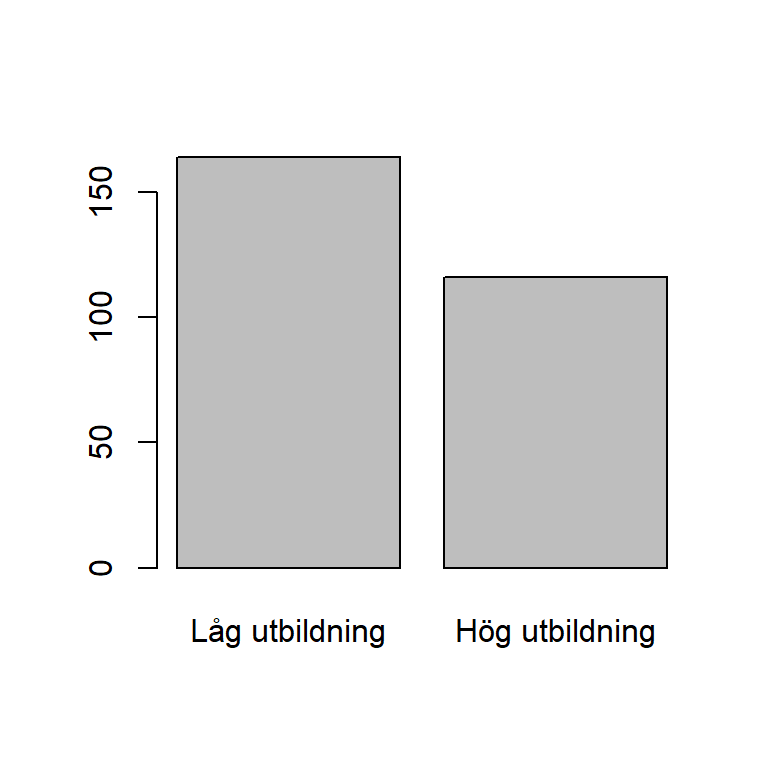
Figuren ovan är inte särskilt intuitiv, och det är svår att veta vad för typ av information den illustrerar. För att snygga till tabellen används argumenten ylab och xlab för att ge namn åt figurens axlar. Detta demonstreras i koden nedan.
barplot(freq_utb_cat, # Anger tabellen som ska beskrivas
ylab = "Antal") # Anger namn för y-axeln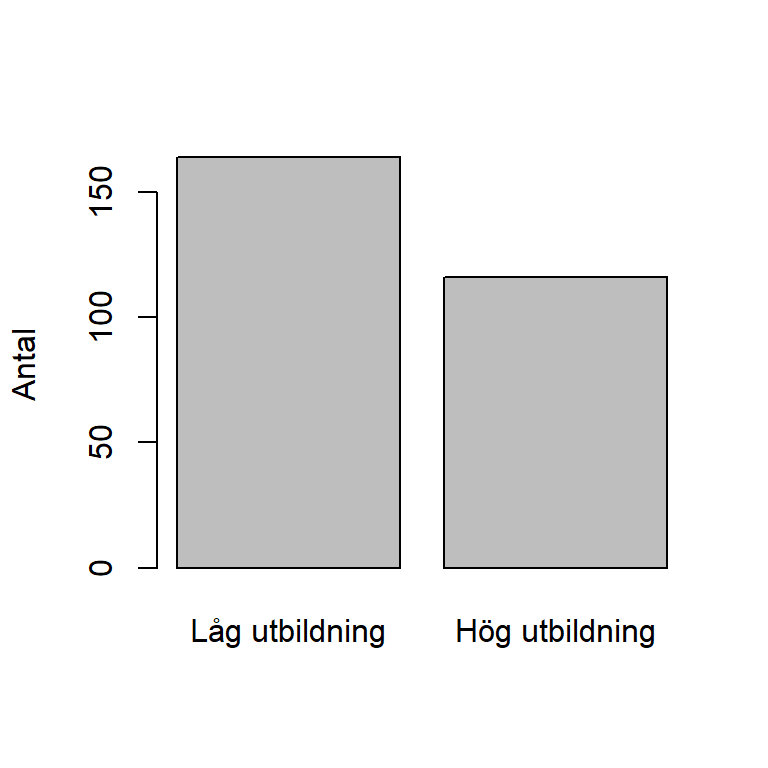
Det är inte bara frekvenstabeller som kan användas i barplot(), utan funktionen är även kompatibel med tabeller som skapats av prop.table(). Detta illustreras nedan.
barplot(procent_utb_cat,
ylab = "Procent (%)")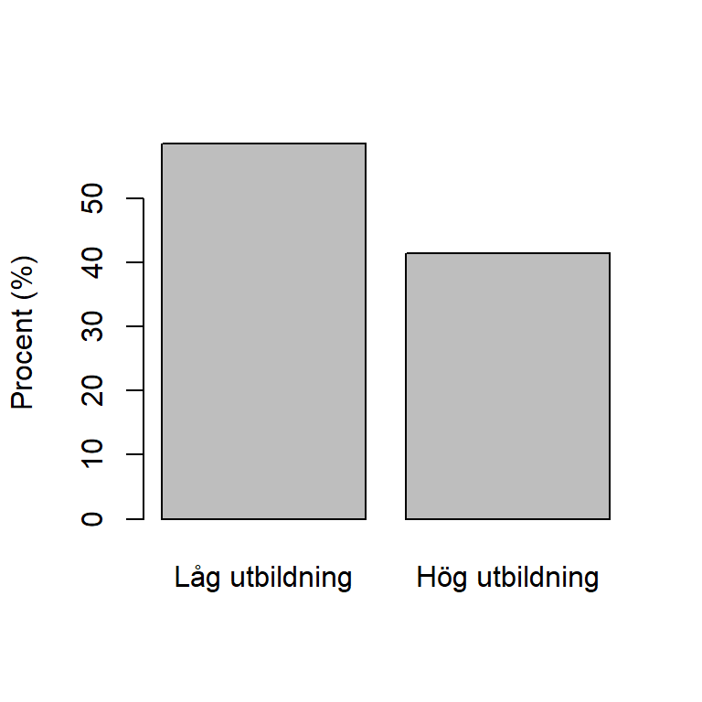
Med argumentet main går det även att ange en titel till diagrammet. Testa gärna detta själv, principen är densamma som för axelnamn.
I det enkla fallet med bara en binär variabel kan stapeldiagram tyckas vara lite onödiga, detta eftersom de tar mycket mer plats än en tabell men egentligen inte tillför någon ny information. Detta är naturligtvis upp till varje enskild användare att göra, men på denna kurser rekommenderas tabeller i detta enkla fall. Detta betyder inte att stapeldiagram inte fyller någon funktioner. I senare avnsitt av detta kapitel visas fler situationer där stapeldiagram är lämpliga.
5.1.3 Inferens
Notera att inferensdelen av detta kapitel inte hör till programmeringsblocket, utan det kommer diskuteras under ett senare block av kursen. Under programmeringsblockets gång kan du med gott samvete hoppa över denna del och börja läsa igen under rubriken “Två binära variabler”.
Hittills har vi ägnat oss åt att beskriva en binär variabel i stickprovet, men ofta är målet att uttala oss om egenskaper i en population, så kallad inferens. Vi kommer i detta avsnitt att utgå från en beskrivande frågeställning och följande två sätt att göra inferens är då vanliga.
- Det första sättet är att beräkna konfidensintervall för med viss säkerhet få en uppfattning om andelen i populationen, \(p\).
- Det andra är att med hypotesprövning undersöka i vilken utsträckning vårt data stämmer överens med en hypotes om populationen, \(H_0: p =p_0\).
Utgångspunkten är ett slumpmässigt urval från en stor population och vi börjar med att se hur ett konfidensintervall kan konstrueras för andelen \(p\) i populationen. Stickprovsandelen är \(\hat{p}\) kan definieras som \(\hat{p}=\dfrac{k}{n}\) där \(n\) är antal försök (antal 0or och 1or) och \(k\) är antalet lyckade försök (antal 1or). Givet OSU och \(np(1-p)>5\) är andelsestimatorn approximativt normalfördelad och ett konfidensintervall ges av \[ \hat{p}\pm z_{\alpha/2}\sqrt{\hat{V}(\hat{p})}, \] där \(\hat{V}(\hat{p}) = \dfrac{\hat{p}(1-\hat{p})}{n}\) är skattningen av stickprovsandelens varians och \(z_{\alpha/2}\) är ett värde från den standardnormalfördelningen baserat på konfidensgraden \(100(1-\alpha)\%\). Notera att felmarginalen är \(z_{\alpha/2}\sqrt{\hat{V}(\hat{p})}\).
Anta variabeln utbldning består av mätningar på individer dragna med OSU från en stor population. Målet är att beräkna ett 95% konfidensintervall för andelen med högutbildning i populationen, \(p\). Genom att implementera ovanstående formler kan detta enkelt beräknas i R.
# Beräkna antalet lyckade försök k (antal 1or)
k <- freq_utb_cat[2]
# Beräkna antal försök (1or or 0r). Denna kodning gör att eventuella NA inte tas med i beräkningen av n
n <- sum(freq_utb_cat)
# Skattning av andelen med hög utbildning. Det går även att använda mean(df$utb_bin)
phat <- k/n
# Skatta variansen
vphat <- phat*(1-phat)/n
# Välja konfidensgrad 100*(1-alpha)%
alpha <- 0.05
# Detta ger värdet för från z-fördelningen med 2.5% i högre svansen
z_alpha <- qnorm((1-alpha/2))
# Konfidensintervallets nedre gräns (lower limit)
ll <- phat - z_alpha*sqrt(vphat)
# Konfidensintervallets övre gräns (upper limit)
ul <- phat + z_alpha*sqrt(vphat)
p_KI <- c(ll, ul)
p_KI
Hög utbildning Hög utbildning
0.3565876 0.4719839
# Undersöker förutsättningen np(1-p) >5. Vi använder phat istället för p eftersom det är det enda vi # har. Man måste alltid undersöka om resultaten går att lita på!
n*phat*(1-phat)
Hög utbildning
67.94286 Vi skattar att 41.4% är högutbildade i populationen. Med 95% säkerhet är andelen högutbildade i populationen mellan 35.7% och 47.2%
Vi ska nu se på hur inferens kan göras i form av hypotesprövning. Givet OSU och samma förutsättningar som för skapandet av konfidensintervall gäller vid hypotesprövning av \(H_0: p = p_{H_0}\) test-statistikan
\[z = \dfrac{\hat{p} - p_{H_0}}{\sqrt{\dfrac{p_{H_0}(1-p_{H_0})}{n}}}\]
är approximativt \(N(0,1)\) om \(H_0\) är sann.
För att exemplifiera, anta att vi vill undersöka om 40% i populationen har hög utbildning. Vi sätter upp hypoteserna \(H_0: p = 0.4\) vs \(H_1: p \neq 0.4\). Utifrån från formeln ovan beräknas det observerat \(z\)-värde. Vi ser sedan se hur extremt det är i en standardnormalfördelning för att få fram \(p\)-värdet. Vad som avses med extremt beror på formulering av mothypotesen, dvs om den är ensidig eller tvåsidig. Om vi önskar fatta ett beslut jämförs \(p\)-värdet mot en förvald signifikansnivå.
# p givet nollhypotesen
pH0 <- 0.4
# Teststatistika
zobs <- (phat - pH0)/sqrt(pH0*(1-pH0)/n)
zobs
Hög utbildning
0.48795
# Vi erhåller ett observerat z-värde. p-värdet är anger hur extremt detta z-värde.
# pnorm() för sannolikheten VÄNSTER om z-värdet. Se Tabell 6.2.A i Formelsamling. För att beräkna # # p-värdet vid två sidig mothypotes används absolutbesloppet (abs()) och vi tar 1 minus och multiplicerar med 2.
p_value <- 2*(1 - pnorm(abs(zobs)) )
p_value
Hög utbildning
0.6255852 Vi erhåller att \(p=\) 0.626. Tolkningen är att givet att andelen högutbildade i populationen skulle vara 40% är sannolikheten 0.63 att observera andelen som observeras eller mer extrem. Data stämmer alltså ganska väl överens med nollhypotesen! Ett beslut på 5% signifikansnivå skulle innebär att vi inte kan förkasta nollhypotesen. Huruvida vi vill fatta ett beslut eller inte beror på målet för analysen.
Det finns dock en inbyggd funktion i R för att göra ovanstående analyser, nämligen prop.test(). I funktionen prop.test() anges först antalet lyckade försök (1or) samt det totala antalet försök (1or och 0r). Med argumentet p anges nollhypotesen och med argumentet alternative specificeras mothypotesen. Argumentet conf.level anger konfidensgrad för konfidensintervallet. Slutligen bestämmer argumentet correct om kontinuitetsskorrektion ska användas. Vi använder inte kontinuitetskorrektion på denna kurs och sätter denna till FALSE.
# Använd funktionen prop.test() för att skapa konfidensintervall utan korrigering
utb_analysis <- prop.test(x = k, # Antal lyckade försök (1or)
n = n, # Antal försök (1or och 0or)
p = 0.4, # H0
alternative = "two.sided", # Mothypotes
conf.level = 0.95, # Signifikansnivå 1-conflevel
correct = FALSE) # Ej kontnuitetskorrektion
utb_analysis
1-sample proportions test without continuity correction
data: k out of n, null probability 0.4
X-squared = 0.2381, df = 1, p-value = 0.6256
alternative hypothesis: true p is not equal to 0.4
95 percent confidence interval:
0.3581276 0.4727639
sample estimates:
p
0.4142857 Vi börjar med att se på resultatet från hypotesprövningen och upptäcker exakt samma \(p\)-värde som förut! Vårt tidigare observerade \(z\)-värde, 0.488 erhålls genom att ta roten ur 0.2380952.
Vidare är konfidensintervallet mycket likt det tidigare framräknade intervallet. De överensstämmer dock inte exakt, vilket beror på att R använder något en annan formel för konfidensintervallet som har något bättre egenskaper om andelen är nära 0 eller 1 och stickprovet är litet.
Anta att vi vill hämta värden från analysen som finns i det sparade objektet utb_analysis. Genom att använda str() redovisas vad som finns sparat i objektet. Koden nedan illustrerar hur \(p\)-värdet kan hämtas om vi enbart är intresserad av just detta.
Risk med inferens när \(p\) är nära 0 eller 1
- Om andelen i populationen är nära 0 eller 1 krävs stort stickprov för att inferensen ska bli korrekt! Tumregeln \(np(1-p)>5\) fungerar dåligt om andelen i populationen är mycket nära 0 eller 1. Konsekvensen blir för lägre konfidensgrad och ett högre Typ-I fel än i förväg angivet. Vi gör fel oftare!
Beträffande konfidensintervall är Wilson score interval, som är det konfidensintervall R använder i prop.test, ett något bättre alternativ än den formeln som vi använder. I de absolut flesta fall har det inget betydelse om vi väljer prop.test() eller intervallet som baseras på normalapproximation.
För hypotesprövning finns alternativet att använda ett så kallat exakt binomial-test. Detta test introduceras emellertid inte här utan vi hänvisar till funktionen binom.test() och tillhörande dokumentation.
Var som sagt uppmärksam om andelen är nära 0 eller nära 1!
Undersök på egen hand med följande app!

Test av andelar eller \(\chi^2\)-test?
Ett prop.test() med två-sidig mothypotes är likvärdigt med \(\chi^2\)-test. \(\chi^2\)-statistikan är samma som \(z\)-statistikan i kvadrat! Problemet med test av \(p\) kan nämligen formuleras som ett goodness-of-fit test med observerade frekvenser (\(116\) 1or och \(164\) 0or) och under nollhypotesen förväntade frekvenser (\(np_{H_0}=112\) 1or och \(n(1-p_{H_0})=168\) 0r). Vi illusterar i en tabell:
1or 0or 116 (112) 164 (168)
Formeln för \(\chi^2\)-testet går det sedan att tillämpa \[\chi^2 = \sum_{i=1}^2 \dfrac{(O_i-E_i)^2}{E_i} = \dfrac{(116-112)^2}{112} + \dfrac{(164-168)^2}{168}=0.2381\] vilket i detta fall jämförs med en \(\chi^2\)-fördelning med 1 frihetsgrad. Notera att mothypotesen vid \(\chi^2\)-testet alltid är två-sidig, vilket motiverar användningen av prop.test().
5.2 Två binära variabler
5.2.1 Tabeller
Det primära analysverktyget för två binära variabler är i regel table(). Även om table() kan användas vid analys av en enda variabel, är den framför allt användbar för att skapa korstabeller, dvs analys av två kategorivariabler samtidigt.
I table() anges den radvisa variabeln först, sedan kolumnvisa variabeln. Tabellen som erhålls kallas i fallet med två variabler för tvåvägs-korstabell. I de fall det går att översätta variablerna i termer av oberoende variabel och beroende variabel, sätts den oberoende variabeln i regel kolumnsvis (x-axel) och den beroende variabeln radvis (y-axel). Detta är analogt med spridningsdiagram som har en \(x\)-variabel och en \(y\)-variabel!
Vi ska nu beskriva sambandet mellan utbildningsnivå och rökning. Först skapas en korstabell med frekvenser, sedan skapas en tabell innehållande andelar. Notera att det kräver en del pusslande för att få tabeller precis som man önskar, men i gengäld erhålls stor flexibilitet vad gäller den slutliga utformningen av tabellen.
freq_table_utb_rokare <- table(df$rokare, df$utb_cat)
freq_table_utb_rokare
>
> Låg utbildning Hög utbildning
> 0 76 80
> 1 88 36Vi har en tabell med frekvenser, men för att använda tabellen måste den i regel modifieras. För det första måste rader och kolumner tydligare namnges. Vi kan här tillämpa funktionerna rownames() och colnames().
# Med rownames() kan vi förtydliga radnamnen
rownames(freq_table_utb_rokare) <- c("Icke rökare", "Rökare")
freq_table_utb_rokare
>
> Låg utbildning Hög utbildning
> Icke rökare 76 80
> Rökare 88 36Om tanken är att utföra en sambandsanalys är det viktigt att åskådliggöra samandet bättre, det är nämligen svårt avläsa samband med enbart frekvenser och därför behöver procentsatser anges. Precis som tidigare används därför funktionen prop.table() på ett objekt från table(). En två-vägs kortstabell ger nu prop.table() tre möjligheter att beräkna andelar:
- Andelar baserade på totala antalet (default)
- Andelar beräknade utifrån radvisa totaler i nämnarna, genom att sätta argumentet
margin = 1 - Andelar baserade på kolumnvisa totaler i nämnarna, genom sätta argumentet
margin = 2.
Notera att det är mycket viktigt att välja rätt andelar att beräkna, eftersom dessa direkt styr tolkningen av resultaten. Vi illustrerar nu hur andelarna beräknas i R och tolkar dem efter det.
# Andelar baserat alla
table_all <- prop.table(freq_table_utb_rokare)
table_all
>
> Låg utbildning Hög utbildning
> Icke rökare 0.2714286 0.2857143
> Rökare 0.3142857 0.1285714
# Andelar baserat rader
table_row_prop <- prop.table(freq_table_utb_rokare, margin = 1)
table_row_prop
>
> Låg utbildning Hög utbildning
> Icke rökare 0.4871795 0.5128205
> Rökare 0.7096774 0.2903226
# Andelar baserat kolumner
table_column_prop <- prop.table(freq_table_utb_rokare, margin = 2)
table_column_prop
>
> Låg utbildning Hög utbildning
> Icke rökare 0.4634146 0.6896552
> Rökare 0.5365854 0.3103448Ägna några minuter åt att försöka tolka de olika tabellerna för dig själv (tolkningarna återges i detalj under fliken här nedan)!
Vilken tabell som redovisas beror således på frågeställning. Om syftet är att studera huruvida utbildning påverkar benägenheten att röka är det den tredje tabellen den som ska redovisas. Det är nämligen i denna enkelt att jämföra andelarna som röker i respektive utbildningskategori.
Vi konstruerar nu en korstabell innehåller både frekvenser och andelar baserade på kolumner, och som tydligt beskriver sambandet. Tabellen konstrueras med cbind(), dessutom skapas procent med en decimal genom att använda round(100*andel, digits = 1).
# Skapa tabell för presentation av analys
table_utb_rokare <- cbind(freq_table_utb_rokare[,1], round(100*table_column_prop[,1], digits = 1),
freq_table_utb_rokare[,2], round(100*table_column_prop[,2], digits = 1))
# Ange kolumnm
colnames(table_utb_rokare) <- c("Låg (n)", "Låg (%)", "Hög (n)", "Hög (%)")
# Se på tabellen
table_utb_rokare
> Låg (n) Låg (%) Hög (n) Hög (%)
> Icke rökare 76 46.3 80 69
> Rökare 88 53.7 36 31Avslutningsvis, för fullständighetens skull, används funktionen addmargins() på tabellobjektet för att addera marginalsummor till tabellen. Genom att ange margin = 1 adderas kolumnsummor, precis som i koden nedan. Prova gärna själv vad som händer när margin = 2 och margin = c(1, 2).
table_utb_rokare_final <- addmargins(table_utb_rokare, margin = 1)
rownames(table_utb_rokare_final) <- c("Icke-rökare", "Rökare", "Summa")
table_utb_rokare_final
> Låg (n) Låg (%) Hög (n) Hög (%)
> Icke-rökare 76 46.3 80 69
> Rökare 88 53.7 36 31
> Summa 164 100.0 116 100Nu är vi klara med tabellen! Det som återstår är att exportera den till ett ordbehandlingsprogram eller ett bildspel, men detta beskrivs i ett senare avsnitt.
5.2.2 Kvantifiering av samband
Samband eller beroende mellan två binära variabler kan kvantifieras med olika mått. Ett vanligt sätt är användning av \(\chi^2\)-måttet för att testa om två variabler är oberoende och kan sägas undersöka hur starkt ett samband är. Förutom \(\chi^2\)-måttet finns en rad andra mått för graden av beroende, såsom Lambda-koefficienten, Cramérs V och tetrakorisk korrelation. Dessa mått introduceras inte här, men det kan vara bra att känna till att det finns alternativ till \(\chi^2\)-måttet.
Ofta vill undersökaren dock relatera sambandet till en konkret frågeställning som inte bara handlar om beroende, det vill säga man önskar få en uppfattning av storleken på sambandet. De tre vanligaste måtten på storleken på samband (så kallade effektstorlekar) mellan två binära variabler är:
- Skillnaden i andelar (absolut jämförelse av andelar): \[p_{\text{diff}} = \Pr(Y=1|X=1) - \Pr(Y=0|X=1) = p_1 - p_0. \] Skillnaden i andelar kan anta värdena \(-1 \leq p_{\text{diff}} \leq 1\) Ofta kallat riskdifferens. Skillnaden i andelar är även en skillnad i procentenheter. \(0\) indikerar ingen skillnad. Positiva värden indikerar en högre sannolikhet i grupp 1 jämfört med grupp 0. Negativa värden indikerar en lägre sannolikhet i grupp 1 jämfört med grupp 0.
- Kvoten av andelar (relativ jämförelse av andelar): \[p_{\texttt{kvot}} = \dfrac{\Pr(Y=1|X=1)}{\Pr(Y=0|X=1)}= p_1/p_0. \] Kvoten av andelar kan anta värdena \(0 \leq p_{\texttt{kvot}} < \infty\). Ofta kallat relativ risk. \(p_{\texttt{kvot}}=1\) indikerar ingen skillnad mellan grupperna. \(p_{\texttt{kvot}} >1\) indikerar en högre sannolikhet i grupp 1 jämfört med grupp 0. \(p_{\texttt{kvot}} < 1\) indikerar en lägre sannolikhet i grupp 1 jämfört med grupp 0.
- Oddskvoten (relativ jämförelse av odds): \[OR = \dfrac{Odds(X=1)}{Odds(X=0)}=\dfrac{\dfrac{\Pr(Y=1|X=1)}{1 - \Pr(Y=1|X=1)}}{\dfrac{\Pr(Y=1|X=0)}{1 - \Pr(Y=1|X=0)}} = \dfrac{p_1/(1-p_1)}{p_0/(1-p_0)}, \] där oddset för en händelse givet \(x\) är definierat som \[Odds(X=x)=\dfrac{\Pr(Y=1|X=x)}{1-(\Pr(Y=1|X=x)}=\dfrac{\Pr(Y=1|X=x)}{\Pr(Y=0|X=x)}.\] Oddskvoten kan anta värdena \(0 \leq OR < \infty\). Ofta kallat oddsratio. \(OR=1\) indikerar ingen skillnad mellan grupperna. \(OR >1\) indikerar en högre sannolikhet i grupp 1 jämfört med grupp 0. \(OR < 1\) indikerar en lägre sannolikhet i grupp 1 jämfört med grupp 0.
Notera att ovanstående mått är definierade utifrån populationen. I praktiken används motsvarigheterna i stickprovet \(\hat{p_1}=k_1/n_1\) och \(\hat{p_0}=k_0/n_0\), där \(k_1\) och \(k_0\) är antalet lyckade försök (antal ettor) i respektive \(x\)-kategori och \(n_1\) och \(n_0\) är antalet försök i respektive \(x\)-kategori.
Vilket av dessa tre mått som är mest relevant att presentera beror på syftet med undersökningen och ofta bör åtminstone både ett absolut mått och ett relativt mått presenteras. Måste man göra en indelning kan absoluta jämförelser av andelar ofta (men inte alltid!) vara mest policy-relevant eftersom måttet kan tolkas som en skillnad i procenheter mellan två stycken grupper. Däremot kan en relativ jämförelse av andelar uppfattas som mer relevant för en enskild individ. Detta beror dock på andra faktorer som populationsstorleken!
Eftersom oddskvoten inte är lika enkel att förstå som relativa andelar är det ett mått som i regel främst väljs på grund av studiedesign eller statistisk analysmetod.
# Beräkna andelen rökare bland högutbildade. Det går även att använda mean( rokare[df$utb_bin == 1] ) eller table_row_prop[2,2]
k1 <- freq_table_utb_rokare[2,2]
n1 <- sum(freq_table_utb_rokare[,2]) # Summera antal i kolumn 2, dvs de i kategori 1
phat1 <- k1/n1
# Beräkna andelen rökare bland lågutbildade. Det går även att använda mean( rokare[df$utb_bin == 0] ) eller table_row_prop[2,1]
k0 <- freq_table_utb_rokare[2,1]
n0 <- sum(freq_table_utb_rokare[,1]) # Summera antal i kolumn 1, dvs de i kategori 0
phat0 <- k0/n0
# Skillnad i andelar
phat_diff <- phat1 - phat0
phat_diff
[1] -0.2262405
# kvot av andelar
phat_kvot <- phat1/phat0
phat_kvot
[1] 0.5783699
# oddskvot
orhat <- (phat1/(1-phat1))/((phat0/(1-phat0)))
orhat
[1] 0.3886364Tolkningen av dessa tre resultat är:
- Bland högutbildade röker 22 procentenheter mindre jämfört med lågutbildade.
- Högutbildade har 100(1 - 0.578)% = 42.2% reducerad sannolikhet (risk) att röka jämfört med lågutbildade.
- Högutbildade har 100(1 - 0.389)% = 62.1% reducerat odds för att röka jämfört lågutbildade.
En pedagogisk poäng skulle vara att vända på analysen, dvs att sätta den kategori som ökar sannolikheten (lågutbildade) som 1 och jämförelsekategorin (högutbildade) som 0. Detta skulle ge följande resultat och tolkning:
- Bland lågutbildade röker 22 procentenheter fler jämfört med lågutbildade.
- Lågutbildade har 72.9% ökad sannolikhet att röka jämfört med högutbildade.
- Lågutbildade har 2.57 gånger större odds för att röka jämfört med lågutbildade.
Absoluta eller relativa jämförelser av andelar?
Anta att 0.2% (2 av 1000) av alla som får Covid-19 dör. Ett studie visar att ett nytt antiviralt läkemedel leder till att endast 0.1% (1 av 1000) dör. Det är en skillnad i dödlighet på endast 0.1 procentenheter, men för individen innebär detta en halverad risk för att dö! Huruvida det är policyrelevant beror dock på hur många man räknar med att drabbas. Låt säg att bara 10 000 drabbas av Covid-19, då skulle läkemedlet rädda 10 liv. Skulle däremot 1 miljon få Covid-19 då skulle läkemedlet potentiellt rädda 10 000 liv.
Anta att arbetsförmedlingen introducerar ett nytt åtgärdsprogram riktat mot gymnasieungdomar som riskerar att inte slutföra gymnasieskolan. Bland eleverna som deltar i programmet kommer 90% få slutbetyg, medan i kontrollgrupp får 70% slutbetyg. Det är alltså en skillnad på hela 20 procentenheter. För en individ ökar dock sannolikheten till behörighet med endast 29%.
5.2.3 Figurer
För att åskådliggöra samband mellan två binära variabler används återigen oftast barplot(), och precis som tidigare används barplot() enklast tillsammans med ett tabell-objekt. Sedan tidigare vet vi att barplot() kan användas för att beskriva enkla frekvanstabeller över en variabel, men i detta avsnitt ska vi visa att det även går att illustrera korstabeller (alltså tabeller med två variabler) med hjälp av barplot().
Innan vi börjar skapa stapeldiagram är det bra att återbekanta oss med tabellerna freq_table_utb_rokare, table_row_prop, table_col_prop, som skapades tidigare. Titta på tabellerna här nedan, och fundera på hur du tror att de resulterande stapeldiagrammen kommer se ut. Diskussion av detta följer nedan.
freq_table_utb_rokare
Låg utbildning Hög utbildning
Icke rökare 76 80
Rökare 88 36
table_row_prop
Låg utbildning Hög utbildning
Icke rökare 0.4871795 0.5128205
Rökare 0.7096774 0.2903226
table_column_prop
Låg utbildning Hög utbildning
Icke rökare 0.4634146 0.6896552
Rökare 0.5365854 0.3103448Med freq_table_utb_rokare skapas ett stapeldiagram som redovisar antalet i respektive kategori. Vad denna figur visar är att det finns fler lågutbildade än högutbildade. Dessutom relaterar diagrammet direkt till frekvenserna i varje cell i tabellen. Denna figur är kan vara användbar i en del fall, men ofta blir det svårt att utläsa samband. Just nu kan du borste från argumentet col och funktionen legend() i kodsnuttarna nedan, och bara fokusera på vad diagrammen faktiskt visar. Vi kommer titta närmare på såväl col som legend() lite senare i detta kapitel.
# Stapeldiagram med frekvenser
barplot(freq_table_utb_rokare, ylab = "Antal", col = c("gray40", "gray95"))
legend("top",
xpd = TRUE,
horiz = TRUE,
inset = c(0,-0.4),
legend = c("Icke-Rökare", "Rökare"),
fill = c("gray40", "gray95"),
bty = "n")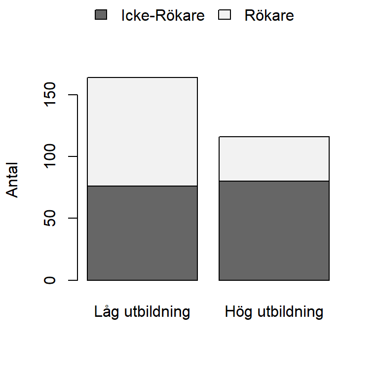
Med table_row_prop blir figuren meninglös eftersom andelen lågutbildade är mer än 1!
barplot(table_row_prop, ylab = "Andel", col = c("gray40", "gray95"))
legend("top",
xpd = TRUE,
horiz = TRUE,
inset = c(0,-0.4),
legend = c("Icke-Rökare", "Rökare"),
fill = c("gray40", "gray95"),
bty = "n")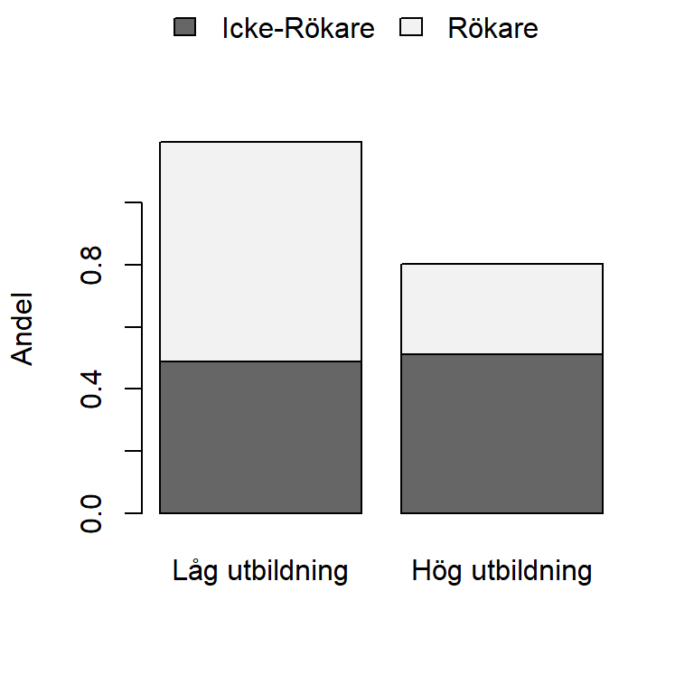
Med table_col_propges en tydlig bild av om andelen rökare inom respektive utbildning. Om vi däremot önskar få någon uppfattning om antalet som finns i respektive utbildningskategori ger denna figur ingen information.
barplot(table_column_prop, ylab = "Andel", col = c("gray40", "gray95"))
legend("top",
xpd = TRUE,
horiz = TRUE,
inset = c(0,-0.4),
legend = c("Icke-Rökare", "Rökare"),
fill = c("gray40", "gray95"),
bty = "n")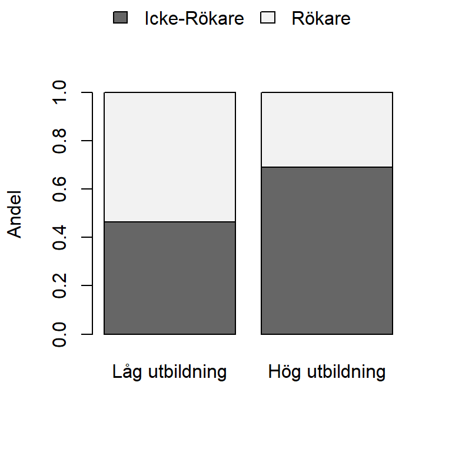
Eftersom denna typ av stapeldiagram kan ses som grafiska representationer av korstabeller är det viktigt att hålla koll på vilka andelar det är som representeras i diagrammen, detta kontrolleras som sagt med margin i table()-funktionen. En tumregel är enkel att se när table_column_prop jämförs med det tredje diagrammet ovan. Som syns representeras en kolumn i table_column_prop av en egen stapel i diagrammet. Detta är standard i R, och det är i regel så att kolumner blir till staplar vid denna typ av operation. Därför är en bra tumregel att alltid ha andelar baserade på kolumner när tabellen ska illustreras i ett stapeldiagram, annars blir diagrammet väldigt svårtolkat.
Nu några ord om argumentet col och funktionen legend(). Som ni kanske förstod används col för att bestämma vilka färger staplarna i diagrammet ska ha. I R finns en mängd färger att välja mellan, en lång lista av färgernas namn åtrefinns här. Testa gärna att ändra på färger i något av diagrammet ovan för att bekanta dig med hur argummentet fungerar.
Vad gäller legend() används funktionen för att lägga till en vägledning/förklaring i figuren. Om figuren skapas helt utan legend() blir den omöjlig att förstå och tolka, se nedan.
barplot(table_column_prop, ylab = "Andel", col = c("gray40", "gray95"))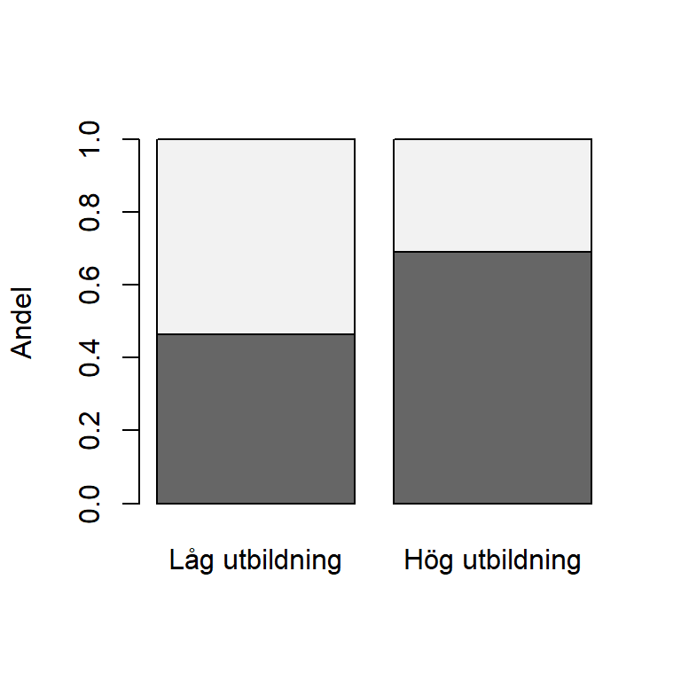
Denna typ av instruktion heter legend på engelska, och i brist på ett bättre svenskt uttryck (den som kommer på ett för gärna höra av sig till Valentin) kommer legend avnändas på denna kurs.
Som syns används legend() i direkt anslutning till barplot() (eller någon annan typ av diagramfunktion). Etersom argumenten är svåra att avkoda direkt följer en kort förklaring av de viktigaste argumenten
- Det första argumentet, ovan specificerat som
"top"anger var i figuren legenden ska finnas. Argumentet kan även specificeras som till exempel"bottom" xpd: sätts nästan alltid tillTRUE. Detta argument avgör huruvida legenden får finnas utanför själva diagrammet eller ej. Om det sätts tillFALSEkommer legenden nästan alltid ligga över staplarna i sig, vilket påverkar diagrammets utseende negativt. Ha därför som vana att stättaxpd = TRUE.horiz: avgör huruvida legenden ska vara horisontell (liggande) eller ej. Om vi vill ha legenden vid sidan av diagrammet, snarare än ovanför eller under, kan det vara mer lämpligt att sättahoriz = FALSEinset: används för att flytta legenden (både lodrätt och vågrätt). Testa att ändra på siffrorna i argumentet för att se hur det fungerar.legend: anger namn på variablerna som finns i legenden. Kontrollera alltid att namnen representerar rätt del av stapeln genom att jämföra med tabellen.fill: anger vika färger som ska finnas i kvadraterna bredvid namnen i legenden. Dessa kopieras nästan alltid direkt från argumentetcolibarplots().bty: anger vilken typ av ruta som ska finnas runt legenden Kan vara antingen"n"(ingen ruta) eller"o"(en rektangel). Testa gärna båda för att se vad som händer.
Det är alltid viktig att kontrollera att diagrammet faktiskt stämmer överens med korstabellen. Kontrollera alltid att färgerna i legenden och diagrammet matchar med rätt andel (frekvens) kategori i tabellen.
Anta att syftet är att studera andelen rökare inom respektive utbildningskategori och vi väljer därför figuren som baseras på table_column_prop.
Med argumentet beside och placering av staplarna bredvid varandra kan sambandet eventuellt tydligare åskådliggöras.
# Uppdelat stapeldiagram
barplot(table_column_prop, ylab = "Andel", col = c("gray40", "gray95"), beside = TRUE)
legend("top",
xpd = TRUE,
horiz = TRUE,
inset = c(0,-0.4),
legend = c("Icke-Rökare", "Rökare"),
fill = c("gray40", "gray95"),
bty = "n")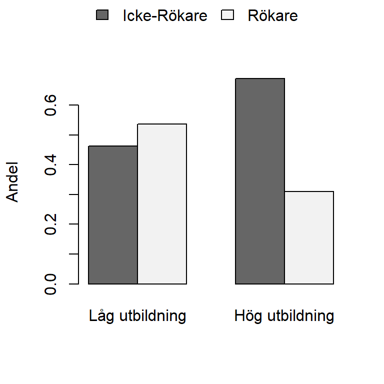
Alternativt skapas ett stapeldiagram baserad på enbart rad 2 från tabellen, dvs andelen rökare i respektive kategori. Förmodligen är detta sista stapeldiagram det tydligaste om vi bara är intresserade av att jämföra andelarna i respektive utbildningsnivå.
barplot( table_row_prop[2,],
names.arg = c("Låg utbildning", "Hög utbildning"),
ylab = "Andel rökare")

Tips för ytterligare modifering av stapeldiagram
Varför inte unyttja den funktionalitet som R erbjuder? Den sista figuren är korrekt, men det kan behövas ytterligare modifiering för att få figuren estestisk tilltalande. Nedan presenteras ett sådant exempel. Vad gör denna figuren bättre än tidigare figurer tycker du?

Notera att utförligare information presenteras i kapitlet med figurer och om koden i exemplet är komplicerad så kan du avvakta. Det är dock ofta en bra princip att titta på kod och undersöka vad som händer när man modifierar koden.
5.2.4 Inferens
Notera att inferensdelen av detta kapitel inte hör till programmeringsblocket, utan det kommer diskuteras under ett senare block av kursen. Under programmeringsblockets gång kan du med gott samvete hoppa över denna del och börja läsa igen under rubriken “Tre kategorier eller fler”.
Anta nu att målet är generalisera analyserna av stickprovet till en population, antingen med hjälp av konfidensintervall eller hypotesprövning.
Vi börjar med att göra inferens för skillnaden i populationsandelar \(p_1\) och \(p_0\) i två populationer, \(p_{diff}=p_1- p_0\). Utgångspunkten här är två oberoende OSU.
Givet att förutsättningarna för normalapproximation håller ges ett konfidensintervall av: \[\hat{p_1} - \hat{p_0}\pm z_{\alpha/2}\sqrt{\dfrac{\hat{p_1}(1-\hat{p_1})}{n_1} + \dfrac{\hat{p_0}(1-\hat{p_0})}{n_0}}\] där \(z_{\alpha/2}\) är värdet hämtat från standardiserade normalfördelningen.
Konfidensintervallet för skillnaden in andelar i populationen kan beräknas med prop.test().
# Ta fram värden för beräkningar
x0 <- freq_table_utb_rokare[2,1] # Antal rökare (1or) bland lågutbildare
x1 <- freq_table_utb_rokare[2,2] # Antal rökare (1or) bland högutbildare
n0 <- sum(freq_table_utb_rokare[,1]) # Antal lågutbildare
n1 <- sum(freq_table_utb_rokare[,2]) # Antal högutbildare
# Skapa konfidensintervall
resultat <- prop.test(c(x1, x0), c(n1, n0), correct = FALSE)
# Skattning av skillnad i andelar
phat_diff <- resultat$estimate[1] - resultat$estimate[2]
p_diff_KI_resultat <- resultat$conf.int
phat_diff
prop 1
-0.2262405
p_diff_KI_resultat
[1] -0.3398732 -0.1126079
attr(,"conf.level")
[1] 0.95Vi kan även implementera formeln ovan och erhålla samma resultat.
# Punktskattningar
phat1 <- x1/n1
phat0 <- x0/n0
phatdiff <- phat1 - phat0
# Skattningen av variansen för skattningen av skillnaden i andelar
vhatphatdiff <- phat1*(1-phat1)/n1 + phat0*(1-phat0)/n0
# Konfidensintervall
alpha <- 0.05
z_alpha <- qnorm(1 - alpha/2)
ll <- phat_diff - z_alpha*sqrt(vhatphatdiff)
ul <- phat_diff + z_alpha*sqrt(vhatphatdiff)
p_diff_KI <- c(ll, ul)
# Resultat
phatdiff
p_diff_KI
# Kolla förutsättningarna!
phat1*(1-phat1)*n1
phat0*(1-phat0)*n0Tolkningen av resultaten kan skrivas på olika sätt. Nedan är två alternativ:
- Bland högutbildade röker 23 procentenheter mindre jämfört med lågutbildade. Med 95% säkerhet finns mellan 34 och 11 procenheter färre rökare bland högutbildade jämfört med lågutbildade.
- Skillnaden i andelen som röker bland högutbildade jämfört med lågutbildade är -0.23 (95% KI: -0.34; -11%).
Litar vi på resultaten? Detta bygger på två förutsättningar, OSU (som vi vet från designen) samt att normalapproximationen (vilket vi undersöker i stickprovet) fungerar.
Anta att syftet inte är att skatta skillnaden i andelen som röker, utan att frågan snarare är huruvida man röker i samma utsträckning oavsett utbildningsnivå. Då kan vi istället genomföra hypotesprövning och testa \(H_0: p_1 = p_0\) mot en två-sidig mothypotes, \(H_0: p_1 \neq p_0\) andvänds test-funktionen \[ z = \dfrac{\hat{p}_1 - \hat{p}_0}{\hat{p}_{pool}(1- \hat{p}_{pool})\left(\dfrac{1}{n_1} + \dfrac{1}{n_0}\right)}\] där \[\hat{p}_{pool} = \dfrac{n_1\hat{p}_1 + n_0 \hat{p}_0}{n_1 + n_0}.\] Testfunktionen är \(N(0,1)\) om nollhypotesen är sann om vi har OSU och om normalapproximation gäller (\(n_1p_1(1-p_1) > 5\) och \(n_0p_0(1-p_0) > 5\)).
Ovanstående test kan göras med prop.test() och vi hämtar resultat från den redan tidigare genomförda analysen.
# Z-test (som beror på X2-värdet när det är tvåsidig)
z <- sqrt(resultat$statistic)
z
X-squared
3.754285
resultat$p.value
[1] 0.0001738371Det andra alternativet är att implementera formeln ovan och beräkna \(p\)-värdet, vilket ger samma resultat.
# Beräkningar baserade på tidigare kvantiteter
pooled_phat <- (n1*phat1 + n0*phat0)/(n1 + n0)
zobs <- (phat1 - phat0)/sqrt(pooled_phat*(1-pooled_phat)*(1/n1 + 1/n0))
p_value <- 2*(1 - pnorm(abs(zobs)))
p_value
[1] 0.0001738371Tolkningen är att givet att andelen rökare är lika stor i bägge utbildningskategorier i populationen så är det 0.0002 sannolikhet att hitta en så stor skillnad i andelar eller större som vi erhållit. Data stämmer alltså inte alls väl överens med nollhypotesen om ingen skillnad!
Det går även att genomföra en ensidig hypotesprövning. Anta att vi vill testa \(H_0: p_0 = p_1\) vs \(H_1: p_1 < p_0\), dvs om andelen rökare mindre bland högutbildade än bland lågutbildade. Vi måste nu prop.test() ange att mothypotesen är mindre än. För testet baserat på formeln ändras inte \(z\)-värdet, däremot hur \(p\)-värdet beräknas i pnorm().
# Version 1
resultat_less <- prop.test(c(x1, x0), c(n1, n0), alternativ = "less", correct = FALSE)
resultat_less
2-sample test for equality of proportions without continuity
correction
data: c(x1, x0) out of c(n1, n0)
X-squared = 14.095, df = 1, p-value = 8.692e-05
alternative hypothesis: less
95 percent confidence interval:
-1.000000 -0.130877
sample estimates:
prop 1 prop 2
0.3103448 0.5365854
# Version 2
pnorm(zobs)
[1] 8.691855e-05Vi får ett mycket lågt \(p\)-värde (\(p<0.001\)) som säger oss att givet att andelen rökare är lika stor i bägge utbildningskategorier i populationen så är det 0.00008 sannolikhet att finna att högutbildade röker i så mycket mindre utsträckning eller ännu mindre jämfört med lågutbildade. Data stämmer alltså inte alls väl överens med nollhypotesen om ingen skillnad!
Ett annat sätt att testa samband mellan binära variabler om vi har en två-sidigt mothypotes är att genomföra ett test för oberoende. En vanlig meted för att testa detta är \(\chi^2\)-metoden, som testar hypoteserna: + \(H_0\): Det finns inget samband mellan variablerna (oberoende) + \(H_1\): Det finns ett samband mellan variablerna (beroende) Notera att mothypotesens riktning är ospecificerad!
Utgå från en \(2\times2\)-tabell med frekvenser från två korstabulerade binära variabler. I respektive cell finns således observerade frekvenser \(O_{ij}\).
| Kolumn 1 | Kolumn 2 | ||||
|---|---|---|---|---|---|
| Rad 1 | \(O_{11}\) | \(O_{12}\) | Radsumma 1 | ||
| Rad 2 | \(O_{21}\) | \(O_{22}\) | Radsumma 2 | ||
| Kolumnsumma 1 | Kolumnsumma 2 | Totalsumma |
Ett oberoendetest för kan genomföras med teststatistikan \[\chi^2 = \dfrac{(O_{11} - E_{11})^2}{E_{11}}+ \dfrac{(O_{12} - E_{12})^2}{E_{12}}+\dfrac{ (O_{21} - E_{21})^2}{E_{21}}+ \dfrac{ (O_{22} - E_{22})^2}{E_{22}},\] där \(E_{ij} = \dfrac{\text{Radsumma i}\cdot \text{Kolumnsumma j}}{\text{Totalsumma}}\) är de förväntade frekvenserna givet att variablerna är oberoende. Teststatistikan är \(\chi^2\)-fördelad med \(1\) frihetsgrad om \(H_0\) är sann och om antalet förväntade frekvenser i alla celler är större än 5. Det framräknade värdet i stickprovet, \(\chi^2_{obs}\), jämförs sedan med denna fördelning. Detta test är alltid ensidigt och genom att se hur extremt värdet är i högra svansen erhålls \(p\)-värdet.
För att implementera testet i R används chisq.test() på ett tabell-objekt med frekvenser. Det går också att tillämpa formeln ovan kan genomföra ett \(\chi^2\)-test. Det framräknade \(\chi^2\)-värdet används sedan i pchisq() för ett erhålla \(p\)-värdet.
resultat_chisq <- chisq.test(freq_table_utb_rokare, correct = FALSE )
resultat_chisq
Pearson's Chi-squared test
data: freq_table_utb_rokare
X-squared = 14.095, df = 1, p-value = 0.0001738Vi erhåller samma \(p\)-värde som när vi testade för skillnad av andelar i fallet med två-sidig mothypotes. \(\chi^2\)-metoden kan alltså användas för att testa andelar, men testet är också ett mer generellt test för oberoende. Om två binära variabler är beroende, så är de beroende oavsett val av effektstorlek. Därför kan \(\chi^2\)-metoden användas även för \(p_{kvot}\) och \(OR\). Oberoende testet testar alltså någon av hypoteserna:
\[H_0: p_{diff} = 0\,\,\,\text{vs}\,\,\,H_1: p_{diff} \neq 0\] \[H_0: p_{kvot} = 1\,\,\,\text{vs}\,\,\,H_1: p_{kvot} \neq 1\] \[H_0: p_{OR} = 1\,\,\,\text{vs}\,\,\,H_1: p_{OR} \neq 1\]
5.3 Tre kategorier eller fler
Detta avsnitt lämpar sig i regel för variabler med relativt få kategorier, låt säga färre än 10. För analys av variabler med många kategorier kan alternativa metoder för analys och presentation vara bättre. Notera ordvalet kan eftersom val av presentation och analys måste bedömas från fall till fall.
5.3.1 Kodning
Från ett statistiskt perspektiv är en variabel med fler än två kategorier antingen på nominal eller ordinal skalnivå. Precis som fallet med binära variabler finns möjligheten att arbeta med faktorer, och det går i funktionen factor() att ange skalnivå med argumentet ordered. Det bör dock nämnas att det är vanligt att vid arbete med faktorer i R inte ta hänsyn till att variabeln är ordinalskala, utan om så görs beror på om analysen kräver det.
Vi inleder med det enklaste fallet, en kategorivariabel på nominalskala. Nedan skapas en faktorvariabel av reklam, som anger uppfattning om reklam för spel, genom att med factor() definera variabeln som en faktor. Vi tillämpar sedan str() för att förvissa oss om att den är definierad som faktor. Vi ser att varaiabeln har 3 nivåer, dvs Factor w/ 3 levels och med funktionen levels() listas nivåerna som är "Har ej tagit ställning", "Ja", "Nej".
# Skapa en faktorvariabel reklam för spel som är på nominalskala
df$reklam_cat <- factor(df$reklam)
# Undersök variabeln egenskaper
str(df$reklam_cat)
> Factor w/ 3 levels "Har ej tagit ställning",..: 3 2 2 2 2 2 2 1 2 3 ...
levels(df$reklam_cat)
> [1] "Har ej tagit ställning" "Ja" "Nej"Något att vara observant över är att en siffra korresponderar till varje faktornivå. Som användare måste man därför vara försiktig vid konvertering av numeriska variabler till faktorer och vice versa. Vi exemplifierar nedan med att skapa en faktorvariabel av den numeriska variabeln inkomst, för sedan göra om den till en numerisk variabel igen med as.numeric. Nedan presenteras data för de 6 första observationerna av inkomst och hur variabeln skiljer sig.
# Jämförelse av inkomst, inkomst kodad som faktorvariabel samt
# inkomst kodad som faktorvariabel konverterad till numerisk variabel igen
cbind(head(df$inkomst), head(factor(df$inkomst)), head(as.numeric(factor(df$inkomst))))
> [,1] [,2] [,3]
> [1,] 13941 52 52
> [2,] 39664 254 254
> [3,] 13168 44 44
> [4,] 28809 181 181
> [5,] 55952 279 279
> [6,] 12495 39 39
# Funktionen head() ger de 6 första elementen.Vi önskar nu skapa en faktor av variabeln alder, som är på ordinal datanivå även om den anges som numerisk med kategorierna 0, 1, 2. Kodningen är dessutom lite kontraintuitiv, eftersom det 0 representerar den äldsta åldersgruppen och 2 den yngsta. När vi ska konvertera den numeriska variabeln alder till en faktorvariabel använder vi två speciella argument. Dels ordered för att ange att faktorn är på ordinal skalnivå, dels levels för att ange ordningen på faktornivåerna. För förtydliga ändrar vi sedan namn på nivåerna. Med str() ser vi nu att variabeln alder_cat är en faktor med tre nivåer, där nivåerna har en inbördes rangordning.
# Gör variabel till faktor och ändra ordningen så är 2 är minst, sedan 1 och sedan 0
df$alder_cat <- df$alder
# Ordningen speciferas när en factor skapas
df$alder_cat <- factor(df$alder,
levels = c(2,1,0),
ordered = TRUE)
# Ändra namn på nivåerna
levels(df$alder_cat)[levels(df$alder_cat) == 0] <- "65-79 år"
levels(df$alder_cat)[levels(df$alder_cat) == 1] <- "50-64 år"
levels(df$alder_cat)[levels(df$alder_cat) == 2] <- "18-49 år"
# Undersök faktorn
str(df$alder_cat)
> Ord.factor w/ 3 levels "18-49 år"<"50-64 år"<..: 2 3 2 1 1 2 1 2 2 2 ...
levels(df$alder_cat)
> [1] "18-49 år" "50-64 år" "65-79 år"För somliga analyser är det praktiskt att arbeta med binära variabler som representerar kategorierna istället för att använda faktor-variabeln. Binära variabler som representerar kategorier kallas för dummy-variabler, och sådana används ofta i regressionsanalys. Det är därför, precis som tidigare för binära variabler, vanligt att ett datamaterial innehåller en och samma kategorivariabel kodad både som en faktor och som dummy-variabel. Notera att det med dummy-variabeler inte är möjligt att ta hänsyn till om variablers kategorier kan rangordnas.
I koden nedan skapas tre nya dummy-variabler, en som representerar varje ålderskategori i alder.
# Skapa binära variabler för respektive ålderskategori
df$alder_1849 <- NA
df$alder_1849[df$alder == 0] <- 0
df$alder_1849[df$alder == 1] <- 0
df$alder_1849[df$alder == 2] <- 1
df$alder_5064 <- NA
df$alder_5064[df$alder == 0] <- 0
df$alder_5064[df$alder == 1] <- 1
df$alder_5064[df$alder == 2] <- 0
df$alder_6579 <- NA
df$alder_6579[df$alder == 0] <- 1
df$alder_6579[df$alder == 1] <- 0
df$alder_6579[df$alder == 2] <- 05.3.2 Tabeller och figurer
Det är när vi har flera kategorier som funktionerna table() och prop.table() framför allt kommer till sin rätt. Det går visserligen att arbeta med de enskilda dummy-variabler, men koden blir lätt omfattande och för omständlig för enbart deskriptiva syften.
Nedand används table() för att analysera variabeln alder_cat, som vi vet har tre kategorier. Notera att både table() och prop.table() används på samma sätt nu som i avsnittet med bara två kategorier.
# Skapar tabell med frekvenser
freq_table_alder <- table(df$alder_cat)
freq_table_alder
>
> 18-49 år 50-64 år 65-79 år
> 66 150 64
# Skapa tabell med andelar
prop_table_alder <- prop.table(freq_table_alder)
prop_table_alder
>
> 18-49 år 50-64 år 65-79 år
> 0.2357143 0.5357143 0.2285714I regel är det önskvärt att snygga till tabellen genom att kombinera både frekvenser och andelar.
table_alder <- cbind(freq_table_alder, round(100*prop_table_alder, digits = 1))
colnames(table_alder) <- c("Frekvens", "Procent (%)")
table_alder
> Frekvens Procent (%)
> 18-49 år 66 23.6
> 50-64 år 150 53.6
> 65-79 år 64 22.9För kategorivariabler med fler kategorier än två blir relationen mellan tabeller och figurer och tydlig. Vi använder nämligen främst stapeldiagram för att redovisa frekvenser eller andelar för en kategorivariabel. Om vi har många kategorier kan dotchart() vara ett alternativ och om kategorierna är heltal används ofta stolpdiagram. Nedan presenteras två stapeldiagram, ett med frekvenser och ett med andelar.
# Stapeldiagram baserat på tabellen med frekvenser
barplot(freq_table_alder,
ylab = "Antal")
# Stapeldiagram baserat på tabellen med andelar
bar_alder <- barplot(prop_table_alder,
ylab = "Andel")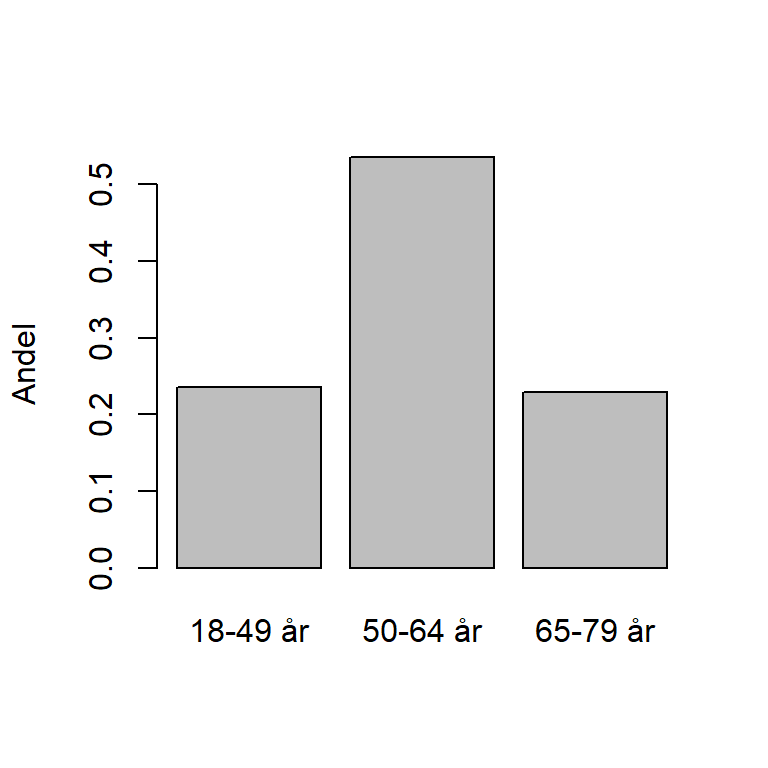
Figurerna ovan kan förbättras på motsvarande sätt som för de binära variablerna.
barplot(freq_table_alder,
ylab = "Antal",
col = "lightblue",
border = "lightblue") # Anger färg till staplarnas kantlinje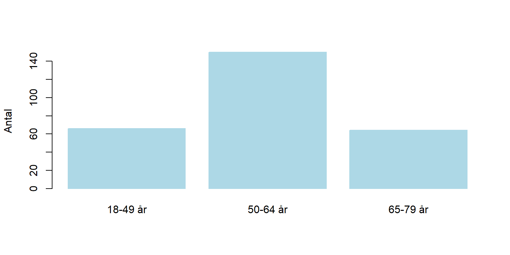
bar_alder <- barplot(round(100 * prop_table_alder, digits = 1),
ylab = "Procent (%)",
col = "lightblue",
border = "lightblue", # Anger färg till staplarnas kantlinje
ylim = c(0, 60)) # Justerar längden på y-axeln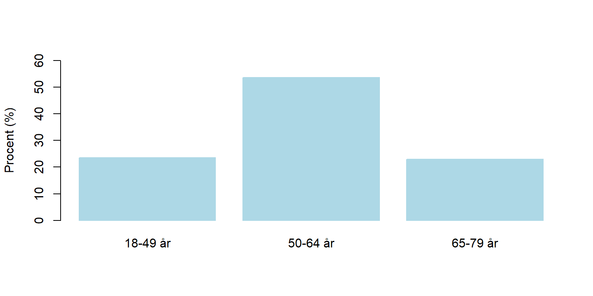
Vad man bör har i åtanke när man skapar stapeldiagram är huruvida staplarnas avstånd till varandra bör vara korrekt representerade i figuren. Består kategorierna av nominal eller ordinalskala är avståndet oviktigt och ofta har man då, per automatik, samma avstånd. Om variabeln däremot är diskret eller till exempel är årtal eller datum måste avståndet mellan staplarna överensstämma med kategoriernas avstånd. Detta görs automatiskt i stolpdiagram.
Vi illustrerar nedan med variabeln mat som mäter antalet matinköp i veckan. När vi undersöker variabeln upptäcker vi att ingen har gjort 6 eller 7 inköp, däremot har 7 stycken svarat 8 gånger. Vi måste alltså skapa en figur som korrekt representerar avståndet mellan 5 och 8 gånger när frekvenserna för dessa antal redovisas. Notera att funktionen plot() används tillsammans med ett tabell-objekt för att skapa ett stolpdiagram.
# Version 1
# Matematiskt korrekt figur, men ej estetiskt tilltalande
freq_table_mat <- table(df$mat)
plot(freq_table_mat, # Tabell
ylab = "Antal", # Namn på y-axel
bty ="l", # Ta bort delar av box-kring figur
xlab = "Antal matinköp per vecka") # Namn på x-axel
# Version 2
# Skapa faktornivåer från minsta till största värdet med min(df$mat):max(df$mat).
# Kom ihåg vad semikolon har för funktion i R. min(df$mat):max(df$mat) skapar
# en vektor med alla heltal mellan det minsta värdet och det största värdet i df$mat.
df$mat_cat <- factor(df$mat, levels = min(df$mat):max(df$mat))
# Skapa en frekvenstabell
freq_table_mat <- table(df$mat_cat)
# Använder barplot för att skapa en semi-korrekt figur, men som är estetiskt tilltalande. Här finns extra kod
barplot(freq_table_mat,
border = "white", # Ta bort linje som annars syns för kategori 6 och 7
col = "lightblue", # Byt färg
ylab = "Antal", # Namn på y-axel
xlab = "Antal matinköp per vecka") # Namn på x-axel
En vanlig typ av kategorivariabel är variabler med likertskala som är en skala vilken mäter olika attityder hos respondenten. Ofta är det önsvärt att för flera sådana variabler ge en samlad översikt i en och samma figur, precis som i figuren som visas här nedan.
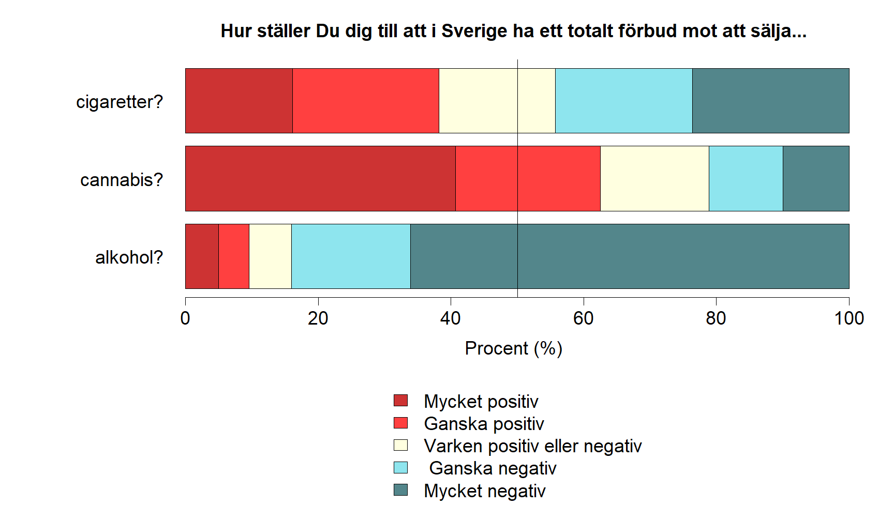
Vi ser att varje liggande stapel representerar en enskild variabel, men att variablerna alla mäts på en gemesam skala som används för att beskriva respondentens attityd till något specifikt fenomen. För att skapa figuren ovan krävs en del arbete, som lättast utförs steg för steg.
Med hjälp av en tabell kan vi beskriva tre likertvariabler som finns i datasetet som mäter attityder till förbud av cigaretter, cannabis och alkohol.
De tre variablerna finns i datamaterialet som lästes in i början av kapitlet. Variablerna är dock numeriska i datamaterialet, vi börjar därför med att skapa tre kategorivariabler, en för varje variabel. Vi ser att ser att variablerna mäts på en skala som kan rangordnas, och därför sätter vi ordered = TRUE och anger en rangordning genom argumentet levels. Vi byter även namn på faktorerna, så att de inte återges som nummer i figuren. Allt detta görs i kodsnutten nedan.
# Skapa faktorer av de likertskalorna
df$cigaretter_cat <- factor(df$cigaretter, levels = c(1, 2, 3, 4, 5), ordered = TRUE)
levels(df$cigaretter_cat) <- c("Mycket positiv", "Ganska positiv", "Varken positiv eller negativ"," Ganska negativ", "Mycket negativ")
df$cannabis_cat <- factor(df$cannabis, levels =c(1, 2, 3, 4, 5), ordered = TRUE)
levels(df$cannabis_cat ) <- c("Mycket positiv", "Ganska positiv", "Varken positiv eller negativ"," Ganska negativ", "Mycket negativ")
df$alkohol_cat <- factor(df$alkohol, levels =c(1, 2, 3, 4, 5), ordered = TRUE)
levels(df$alkohol_cat ) <- c("Mycket positiv", "Ganska positiv", "Varken positiv eller negativ"," Ganska negativ", "Mycket negativ")Vi fortsätter genom att skapa tre enkla frekvenstabeller, en för varje kategorivariabel
freq_table_cigaretter <- table(df$cigaretter_cat)
freq_table_cannabis <- table(df$cannabis_cat)
freq_table_alkohol <- table(df$alkohol_cat)Om vi tittar närmare på en av tabellerna ser vi att den presenterar hur många respondenter som hör till varje kategori
freq_table_cigaretter
>
> Mycket positiv Ganska positiv
> 45 62
> Varken positiv eller negativ Ganska negativ
> 49 58
> Mycket negativ
> 66Vi vet sedan tidigare att varje kolumn i en tabell blir en egen stapel i ett stapeldiagram. Därför kan vi använda funktionen cbind() och binda samman de tre tabellerna ovan till ett nytt objekt, där varje tabell blir en egen kolumn
freq_table_ban <- cbind(freq_table_cigaretter, freq_table_cannabis, freq_table_alkohol)
freq_table_ban
> freq_table_cigaretter freq_table_cannabis
> Mycket positiv 45 114
> Ganska positiv 62 61
> Varken positiv eller negativ 49 46
> Ganska negativ 58 31
> Mycket negativ 66 28
> freq_table_alkohol
> Mycket positiv 14
> Ganska positiv 13
> Varken positiv eller negativ 18
> Ganska negativ 50
> Mycket negativ 185För att få andelar beräknade använder vi prop.table() precis som tidigare, och kommer ihåg att sätta margin = 2 för att räkna ut andelar kolumnvis.
prop_table_ban <- prop.table(freq_table_ban, margin = 2)
prop_table_ban
> freq_table_cigaretter freq_table_cannabis
> Mycket positiv 0.1607143 0.4071429
> Ganska positiv 0.2214286 0.2178571
> Varken positiv eller negativ 0.1750000 0.1642857
> Ganska negativ 0.2071429 0.1107143
> Mycket negativ 0.2357143 0.1000000
> freq_table_alkohol
> Mycket positiv 0.05000000
> Ganska positiv 0.04642857
> Varken positiv eller negativ 0.06428571
> Ganska negativ 0.17857143
> Mycket negativ 0.66071429För att räkna om till procentsatser multiplicerar vi andelstabellen med 100, och sedan snyggar vi till den med round()
likert_tabell <- round(100 * prop_table_ban, digits = 1)
likert_tabell
> freq_table_cigaretter freq_table_cannabis
> Mycket positiv 16.1 40.7
> Ganska positiv 22.1 21.8
> Varken positiv eller negativ 17.5 16.4
> Ganska negativ 20.7 11.1
> Mycket negativ 23.6 10.0
> freq_table_alkohol
> Mycket positiv 5.0
> Ganska positiv 4.6
> Varken positiv eller negativ 6.4
> Ganska negativ 17.9
> Mycket negativ 66.1Nu kan vi skapa ett stapeldiagram för att illustrera tabellen ovan. Notare att diagrammet behöver justeras ganska mycket för att se ut som likertfigure ovan.
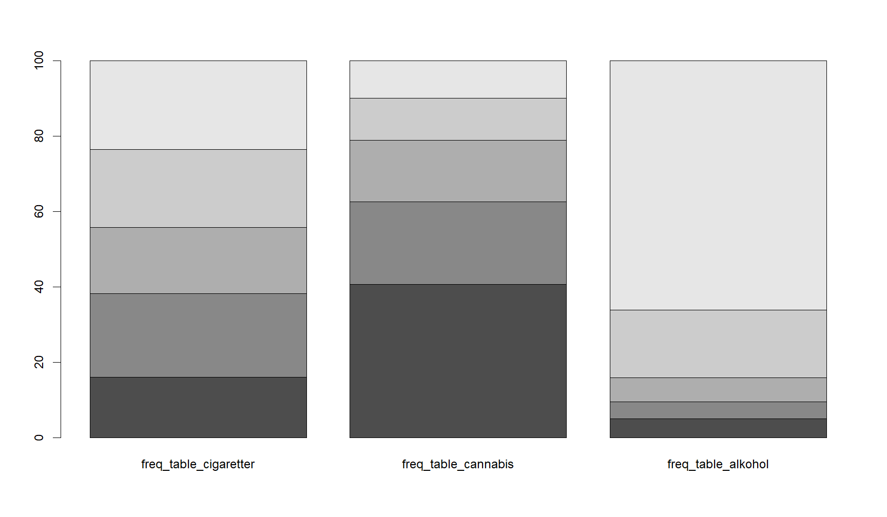
Vi börjar med att vrida på diagrammet så att staplarna ligger ner med horiz = TRUE och att ge \(x\)-axeln ett nytt namn. Vi ger staplarna snyggare namn med names.arg, och sätter färger på staplarna med col.
barplot(likert_tabell, horiz = TRUE, xlab = "Procent (%)",
names.arg = c("Cigaretter?", "Cannabis?", "Alkohol?"),
col = c("brown3", "brown1", "lightyellow", "cadetblue2", "cadetblue4"))Vi ser att ytterligare några saker behöver justeras. Dels behöver stapelnamnen vridas 90 grader för att bli horisontella (detta ändras genom att sätta argunemtet las = 1), dels behövs en legend till figuren (detta ordnar vi som vanligt med legend()).
barplot(likert_tabell, horiz = TRUE, xlab = "Procent (%)",
names.arg = c("Cigaretter?", "Cannabis?", "Alkohol?"),
col = c("brown3", "brown1", "lightyellow", "cadetblue2", "cadetblue4"),
las = 1)
legend("bottom", inset = c(0,-0.9), horiz = FALSE, xpd = TRUE, bty = "n",
legend = c("Mycket positiv", "Ganska positiv", "Varken positiv eller negativ", "Ganska negativ", "Mycket negativ"),
fill = c("brown3", "brown1", "lightyellow", "cadetblue2", "cadetblue4"))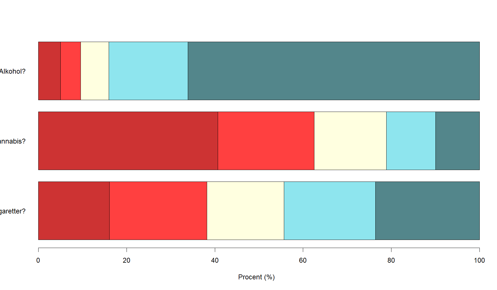
Vi ser att legenden inte syns just, trots att koden är korrekt. Detta kommer sig av att den inte får plats i figuren för tillfället. För att göra plats för legenden måste vi justera marginalerna för figuren (alltså trycka ihop den lite för att få plats med legenden under), detsamma gäller för stapelnamnen. Vi båste alltså fria upp mer plats till vänster om och under staplarna.
För att ändra marginalerna använder vi funktionen par(), och anger marginalerna i en vektor genom argumentet mar. Standardinställningarna är par(mar = c(5.1, 4.1, 4.1, 2.1)). Det första värdet justerar den nedre marginalen, det andra värdet justerar vänstermarginalen, det tredje värdet justerar den övre marginalen, och det fjärde värdet justerar högermarginalen. För att göra mer plats under och till vänster om diagrammet gör vi marginalerna lite större. Det är viktigt att alltid återställa marginalerna efter att de ändrats. R gör inte detta automatiskt, utan kommer använda de marginaler som anges så länge de inte ändras igen.
par(mar = c(15, 12, 4, 3))
barplot(likert_tabell, horiz = TRUE, xlab = "Procent (%)",
names.arg = c("Cigaretter?", "Cannabis?", "Alkohol?"),
col = c("brown3", "brown1", "lightyellow", "cadetblue2", "cadetblue4"),
las = 1)
legend("bottom", inset = c(0,-0.9), horiz = FALSE, xpd = TRUE, bty = "n",
legend = c("Mycket positiv", "Ganska positiv", "Varken positiv eller negativ", "Ganska negativ", "Mycket negativ"),
fill = c("brown3", "brown1", "lightyellow", "cadetblue2", "cadetblue4"))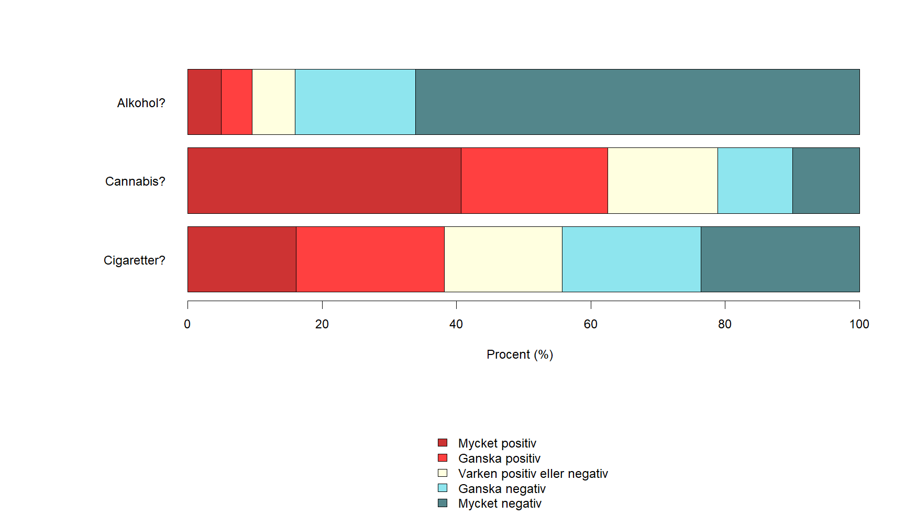
par(mar = c(5.1, 4.1, 4.1, 2.1))Vi kan nu finjustera genom att lägga till den vertikala linjen i mitten med funktionen abline()
par(mar = c(15, 12, 4, 3))
barplot(likert_tabell, horiz = TRUE, xlab = "Procent (%)",
names.arg = c("Cigaretter?", "Cannabis?", "Alkohol?"),
col = c("brown3", "brown1", "lightyellow", "cadetblue2", "cadetblue4"),
las = 1)
legend("bottom", inset = c(0,-0.9), horiz = FALSE, xpd = TRUE, bty = "n",
legend = c("Mycket positiv", "Ganska positiv", "Varken positiv eller negativ", "Ganska negativ", "Mycket negativ"),
fill = c("brown3", "brown1", "lightyellow", "cadetblue2", "cadetblue4"))
abline(v = 50)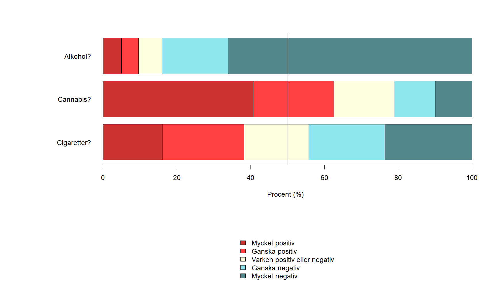
par(mar = c(5.1, 4.1, 4.1, 2.1))Den intresserade läsaren kanske även vill ange procentsatser tillhörande varje färg i diagrammet. För att göra så kan koden nedan användas. Notera att den extra koden som har med procentsatserna att göra är överkurs, och inte någon som studenter förväntas memorera och kunna till tentan. Studenter som gärna vill göra figurer med procentsatser i kan med gott samvete kopiera koden nedan och justera så att variablerna i tabellen stämmer.
par(mar = c(15, 12, 4, 3))
mybar <- barplot(likert_tabell, horiz = TRUE, xlab = "Procent (%)",
names.arg = c("Cigaretter?", "Cannabis?", "Alkohol?"),
col = c("brown3", "brown1", "lightyellow", "cadetblue2", "cadetblue4"),
las = 1)
legend("bottom", inset = c(0,-0.9), horiz = FALSE, xpd = TRUE, bty = "n",
legend = c("Mycket positiv", "Ganska positiv", "Varken positiv eller negativ", "Ganska negativ", "Mycket negativ"),
fill = c("brown3", "brown1", "lightyellow", "cadetblue2", "cadetblue4"))
abline(v = 50)
# Skapa koordinater för att rita in procent i kategorierna
# Likert 1
# x-koordinat ges av följande kod
coord_x_1 <- c(0, cumsum(likert_tabell[ , 1]))
coord_x_1 <- coord_x_1[-length(coord_x_1)] + diff(coord_x_1)/2
# y-koordinat ges av följande kod
coord_y_1 <- mybar[1]
text(x = coord_x_1,
y = coord_y_1,
labels = paste(likert_tabell[ , 1], "%", sep=""),
cex = 1.2) # Procentvärden hämtas från tabellen
# Likert 2
coord_x_2 <- c(0,cumsum(likert_tabell[ , 2]))
coord_x_2 <- coord_x_2[-length(coord_x_2)] + diff(coord_x_2)/2
coord_y_2 <- mybar[2]
text(x = coord_x_2,
y = coord_y_2,
labels = paste(likert_tabell[ , 2], "%", sep=""),
cex = 1.2)
# Likert 3
coord_x_3 <- c(0,cumsum(likert_tabell[ , 3]))
coord_x_3 <- coord_x_3[-length(coord_x_3)] + diff(coord_x_3)/2
coord_y_3 <- mybar[3]
text(x = coord_x_3,
y = coord_y_3,
labels = paste(likert_tabell[ , 3], "%", sep=""),
cex = 1.2) 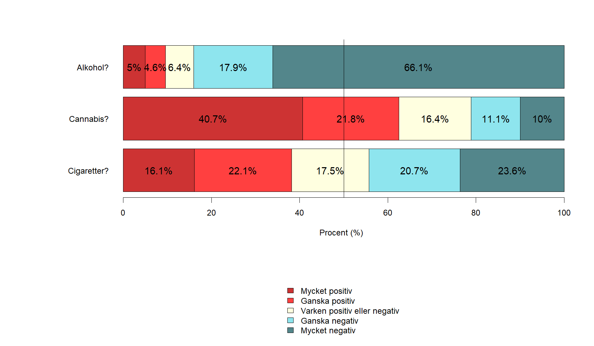
par(mar = c(5.1, 4.1, 4.1, 2.1))5.3.3 Inferens
Notera att inferensdelen av detta kapitel inte hör till programmeringsblocket, utan det kommer diskuteras under ett senare block av kursen. Under programmeringsblockets gång kan du med gott samvete hoppa över denna del och börja läsa igen under rubriken “Samband mellan kategorivariabler”.
Om vi har flera kategorier kan det vara av intressera att testa hypotetiskt fördelning av andelar i populationen. Då kan vi genomföra ett goodness of fit-test (GOF) som undersöker överstämmelsen mellan observerad data och denna hypotetiska population (som är vår fördelning). Anta att vi i ett OSU observerar en kategorivariabeln med \(k\) kategorier. Hypoteserna kan då formuleras utifrån andelar i respektive kategori, dvs + \(H_0: p_1 = p_{1,H_0}, p_2 = p_{2,H_0}, \ldots, p_k = p_{k,H_0}\) + \(H_1:\) Minst en av andelarna inte överstämmer med värdet under nollhypotesen.
- Ett GOF-test kan genomföras med teststatistikan \[\chi^2 = \sum_{i=1}^k\dfrac{ (O_i - E_i)^2}{E_i}= \dfrac{ (O_1 - E_1)^2}{E_1}+ \dfrac{ (O_2 - E_2)^2}{E_2}+\ldots+ \dfrac{ (O_k - E_k)^2}{E_k}\] där \(O_i\) är antalet observerade frekvenser i kategori \(i\) och \(E_i\) är antalet förväntade frekvenser, enligt nollhypotesen, i kategori \(i\). Teststatistikan är \(\chi^2\)-fördelad med \(k-1\) frihetsgrader givet att nollhypotesen är sann och ett OSU. Dessutom krävs att alla förväntade frekvenser är större än 5 (analogt med normalapproximation).
För att genomföra \(\chi^2\)-metoden i R används funktionen chisq.test(), som vi tillämpar på en frekvenstabell.
Exempel: Åldersfördelning
Vi spekulerar i att det i populationen finns 65% i ålderskategorin 18-49 år, 20% i ålderskategorin 50-64 år och 15% ålderskategorin 65-79 år. Målet är att jämföra stickprovets åldersfördelning med populationen. Eftersom det finns flera kategorier formuleras hypoteserna som \[H_0: p_1 = 0.3,p_2 = 0.45,p_3 = 0.25\] mot \[H_1: \text{Minst en av andelarna inte överstämmer med värdet under nollhypotesen.}\]
# chitvå-test baserat på den tidigar frekvenstabellen
resultat <- chisq.test(freq_table_alder, # Frekvenstabell
p = c(0.3, 0.45, 0.25), # Andelar under H0
correct = FALSE) # Ej kontuitetskorrektion
# Frihetsgrader
resultat$parameter
> df
> 2
# X2obs
resultat$statistic
> X-squared
> 8.942857
# p-värde
resultat$p.value
> [1] 0.01143097Resultatet (\(\chi^2=8.94, fg=2\)) ger ett lågt \(p\)-värde (\(p=0.011\)). Tolkningen är att om observerad data är slumpmässigt draget från befolkningen är det låg sannolikhet att observera en så stor skillnad eller större mellan de observerade värdena och de förväntade. Data stämmer således inte överens med nollhypotesen. Vad \(p\)-värdet inte besvarar är varför överstämmelsen är låg. Antigen är vår nollhypotes fel, dvs fördelningen i populationen faktiskt är en annan, eller så innebär ett lågt \(p\)-värde att urvalet inte är ett OSU.
5.4 Samband mellan kategorivariabler
5.4.1 Tabeller och figurer
För att beskriva ett samband mellan två kategorivariabler används korstabeller på motsvarande sätt som för binära variabler. Det innebär att vi måste reflektera över om det är frekvenser eller andelar som är det relevanta att redovisa. Dessutom måste vi i funktionen prop.table() ange om andelarna ska beräknas radvis, kolumnvis eller baserat på totalen.
Vi illustrerar med att undersöka om det finns ett samband mellan ålder och uppfattningen om TV-reklam för spel bör vara tillåtet eller inte.
# Skapa en korstabell med frekvenser för ålder och reklam.
# Vi antar i detta fall att ålder är oberoende variabler och reklam beroende och placerar därför
# ålder kolumnvis och reklam radvis
freq_table_reklam_alder <- table(df$reklam, df$alder_cat)
# Beräkna kolumnprocent för
prop_table_reklam_alder <- prop.table(freq_table_reklam_alder, margin = 2)
prop_table_reklam_alder
>
> 18-49 år 50-64 år 65-79 år
> Har ej tagit ställning 0.4242424 0.2933333 0.4218750
> Ja 0.3484848 0.3000000 0.3750000
> Nej 0.2272727 0.4066667 0.2031250Resulatet visar att i stickprovet är den negativa uppfattningen om TV-reklam och spel störst i åldergruppen 50-64 år, där 41% menar att TV-reklam för spel ej bör vara tillåtet. I åldersgrupperna 18-49 år och 65-79 år har 42% inte tagit ställning.
Nu ska vi se om vi kan kombinera frekvenser och procent i samma figur.
# Skapa en tabell med procent
procent_table_reklam_alder <- round(100*prop_table_reklam_alder,1)
# Kombinera frekvenser och procent genom att ta varannan kolumn och kombinera dem
table_reklam_alder <- cbind(freq_table_reklam_alder[,1], paste(procent_table_reklam_alder[,1], "%", sep=""),
freq_table_reklam_alder[,2], paste(procent_table_reklam_alder[,2], "%", sep=""),
freq_table_reklam_alder[,3], paste(procent_table_reklam_alder[,3], "%", sep=""))
colnames(table_reklam_alder) <- c(levels(df$alder_cat)[1], "",
levels(df$alder_cat)[2], "",
levels(df$alder_cat)[3], "")
table_reklam_alder
> 18-49 år 50-64 år 65-79 år
> Har ej tagit ställning "28" "42.4%" "44" "29.3%" "27" "42.2%"
> Ja "23" "34.8%" "45" "30%" "24" "37.5%"
> Nej "15" "22.7%" "61" "40.7%" "13" "20.3%"För att redovisa samband mellan kategorivariabler används i regel stapeldiagram. Nedan redovisas sambandet mellan ålder och reklam med de olika alternativ som finns för stapeldiagram, dvs frekvenser eller andelar samt om stapeldiagrammen ska vara uppdelade eller ej. Av alternativen är D förmodligen att föredra om detta samband ska utvärderas, men notera att detta alternativ inte ger någon information om uppfattningen om antalet i grupperna. Då hade B fungerat bättre. Du kan hitta koden som använts för att skapa diagrammen i fliken under figuren. barplot() används genomgående, med olika specifikationer för olika argument. Som en övningsuppgift kan du försöka gå igenom koden i fliken och kommentera vad varje rad gör, för att få bättre koll på de olika argumenten.
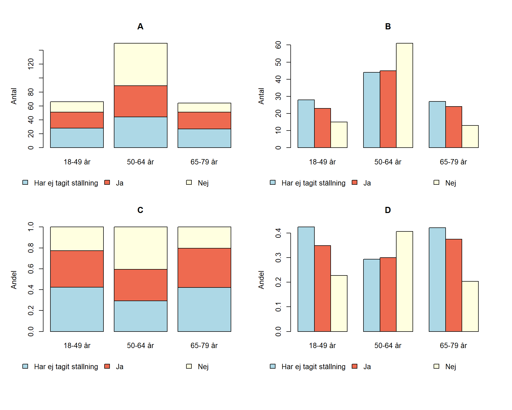
5.4.2 Inferens
Notera att inferensdelen av detta kapitel inte hör till programmeringsblocket, utan det kommer diskuteras under ett senare block av kursen. Under programmeringsblockets gång kan du med gott samvete hoppa över denna del och gå direkt till övningsuppgifterna.
Det finns ett antal metoder för att analysera samband mellan kategorivariabler. Utgångspunkten i detta kapitel är man genom att korstabulera variablerna erhåller en korstabell som innehåller frekvenser för kombinationerna av variablernas kategorier. I respektive cell finns således observerade frekvenser \(O_{ij}\) i cellen på rad \(i\) och kolumn \(j\). Tabellen nedan illustrerar.
| Kolumn 1 | Kolumn 2 | Kolumn k | |||
|---|---|---|---|---|---|
| Rad 1 | \(O_{11}\) | \(O_{12}\) | \(\cdots\) | \(O_{1k}\) | Radsumma 1 |
| Rad 2 | \(O_{21}\) | \(O_{22}\) | \(\cdots\) | \(O_{2k}\) | Radsumma 2 |
| \(\vdots\) | \(\vdots\) | \(\vdots\) | \(\ddots\) | \(\vdots\) | \(\vdots\) |
| Rad r | \(O_{r1}\) | \(O_{r2}\) | \(O_{rk}\) | Radsumma r | |
| Kolumnsumma 1 | Kolumnsumma 2 | \(\cdots\) | Kolumnsumma k | Totalsumma |
Tabellen kan användas för att genomföra ett oberoendetest där nollhypotesen är \(H_0: \text{Variablerna är oberoende}\) vs \(H_1: \text{Variablerna är beroende}\). Notera att testet inte har någon riktning.
- Ett oberoendetest kan genomföras med teststatistikan \[\chi^2 = \sum_{i=1}^r\sum_{j=1}^k \dfrac{(O_{ij} - E_{ij})^2}{E_{ij}} = \dfrac{(O_{11} - E_{11})^2}{E_{11}}+ \dfrac{(O_{12} - E_{12})^2}{E_{12}}+\ldots+ \dfrac{ (O_{rk} - E_{rk})^2}{E_{rk}},\] där \(E_{ij} = \dfrac{\text{Radsumma i}\cdot \text{Kolumnsumma j}}{\text{Totalsumma}}\) är de förväntade frekvenserna givet att variablerna är oberoende. Teststatistikan är \(\chi^2\)-fördelad med \((r-1)(k-1)\) frihetsgrader om \(H_0\) är sann och om antalet förväntade frekvenser i alla celler är större än 5. Det framräknade värdet i stickprovet, \(\chi^2_{obs}\), jämförs sedan med denna fördelning. Genom att se hur extremt värdet är i högra svansen erhålls \(p\)-värdet.
Notera att denna typ av sambandsanalys inte tar någon hänsyn till om variablerna går att rangordna. Alltså använder vi eventuellt inte all tillgänglig information. För variabler på ordinalskala finns alternativa metoder som därför eventuellt har högre styrka, exempelvis Spearmans rangkorrelation. Detta faktum innebär dock inte att \(\chi^2\)-metoden inte kan användas.
Vi illustrerar testet genom att studera sambandet mellan ålder och uppfattningen om TV-reklam för spel bör vara tillåtet eller inte. Baserat på en OSU bestående av \(n=280\) testar vi nu om dessa variabler är oberoende.
# Vi använder freq_table_reklam_alder från tidigare uppgift
test_reklam_alder <- chisq.test(freq_table_reklam_alder, correct = FALSE)
test_reklam_alder
>
> Pearson's Chi-squared test
>
> data: freq_table_reklam_alder
> X-squared = 12.265, df = 4, p-value = 0.01549Det låga \(p\)-värdet \(p=0.015\) säger att om variablerna är oberoende så är det låg sannolikhet att hitta så stora avvikelser som gör eller större. Data stämmer inte överens med nollhypotesen om inget beroende och vi lutar åt att faktiskt variablerna faktiskt är beroende.
En manuell version av testet ger exakt samma resultat.
# Chitvå-test manuellt
Oij <- freq_table_reklam_alder
Ri <- rowSums(Oij)
Ki <- colSums(Oij)
Totalsumma <- sum(Oij)
# Skapa en matrix med förväntade frekvenser
Eij <- matrix(NA, dim(Oij)[1], dim(Oij)[2])
Eij[1,1] <- Ri[1]*Ki[1]/Totalsumma
Eij[1,2] <- Ri[1]*Ki[2]/Totalsumma
Eij[1,3] <- Ri[1]*Ki[3]/Totalsumma
Eij[2,1] <- Ri[2]*Ki[1]/Totalsumma
Eij[2,2] <- Ri[2]*Ki[2]/Totalsumma
Eij[2,3] <- Ri[2]*Ki[3]/Totalsumma
Eij[3,1] <- Ri[3]*Ki[1]/Totalsumma
Eij[3,2] <- Ri[3]*Ki[2]/Totalsumma
Eij[3,3] <- Ri[3]*Ki[3]/Totalsumma
# Beräkna observerat chitvå-värde och p-värde
X2obs <- sum((Oij - Eij)^2/Eij)
fg <- (dim(Oij)[1] -1)*(dim(Oij)[2] -1)
p_value <- 1 - pchisq(X2obs, fg)5.5 Programmeringsuppgifter
5.5.1 Uppgift 1
Antag att 150 studenter blivit frågade om de hellre dricker kaffe eller te i en föreläsningspaus. Studenternas svar finns samlande i vektorn kaffe i fliken nedan, i vektorn motsvarar 1 en student som svarat att hen föredrar kaffe, och 2 en student som tycker bättre om te.
- Börja med att kopiera koden i fliken, och att klistra in och köra den i ett script i RStudio. Vilken klass får vektorn när den läses in av
R?
- Skapa en frekvenstabell över
kaffe, och spara den i ett objekt med lämpligt namn. Är det vanligast att dricka kaffe eller te i föreläsningspauser?
- Skapa ett stapeldiagram som illustrerar frekvenstabellen i b. Se till att ge diagrammets axlar informativa namn.
Som synes blir varken tabellen i b. eller diagrammet i c. riktigt intuitiva, utan R använder genomgående de numeriska kodningarna 1 och 2 istället för t.ex. “Kaffe” respektive “Te”. Detta kan åtgärdas på två sätt, antingen genom att skapa en ny kaffevariabel med kategorisk kodning, eller med hjälp av en faktorvariabel. De följande uppgifterna tittar närmare på båda dessa alternativ, och börjar med det första.
- Skapa en ny vektor som heter
kaffe_kat. Vektorn ska speglakaffefrån tidigare, men ska istället för1och2ha “Kaffe” respektive “Te” som element.
- Använd nu
kaffe_katför att skapa en tabell och ett stapeldiagram som i deluppgiterna b. och c. Hur skiljer de sig åt?
Det andra alternativet är att skapa en ny faktorvariabel, och använda den för att skapa tabeller och diagram.
- Skapa faktorivariabeln
kaffe_fak, som bygger påkaffe, och koda nivåernas namn till “Kaffe” och “Te”.
- Använd nu
kaffe_fakför att skapa samma frekvenstabell och stapeldiagram som tidigare (sorry för så många deluppgifter).

5.5.2 Uppgift 2
Utgå ifrån datamaterialet i förra uppgiften, och antag att det tillkommit information gällande huruvida studenterna har mjölk i sin varma dryck. Kod som skapar en ny vektor, mjolk finns att kopiera i fliken nedan. Gör så, och klistra in och kör koden i RStudio. I mjolk tolkas en etta som att person i fråga vill ha mjölk i sin dryck, och en nolla som att personen helst dricker kaffe/te utan mjölk.
- Skapa en data frame,
df_kaffe, som innehållerkaffeochkaffe_fakfrån förra uppgiften, och vektornmjolkfrån denna uppgift.
- Lägg till en ny variabel i
df_kaffe, och döp den tillmjolk_fak.mjolk_fakska vara en faktorvariabel med två nivåer: nivån “Med” för dem som dricker med mjölk, och nivån “Utan” för dem som dricker utan mjölk.
- Skapa en korstabell som visar
mjolk_fakradvis (på \(y\)-axeln), ochkaffe_fakkolumnvis (längs med \(x\)-axeln). Spara tabellen i ett lämpligt döpt objekt.
- Använd tabellen från c. för att skapa en ny korstabell som visar andelar istället för frekvenserna. Se till så att andelerana för varje kolumn summerar till 1.
- Illustrera informationen i
p_tab_kaffe_mjolkmed hjälp av ett stapeldiagram. Var noga med att skapa en nyckel som gör diagramet lätt att läsa.
5.5.3 Uppgift 3
I fliken nedan finns en data frame som innehåller data ur den den svenska delen av den sjätte vågen av World Values Survey. I datamaterialet finns kolumnerna
children: Anger hur många barn respondenten hade vid frågetillfällefight: Anger huruvida respondenten är beredd att försvara Sverige i händelse av krig (svaret “Ja” kodas som1, och svaret “Nej” som2)
Börja med att kopiera koden som finns i fliken, och klistra in och kör den i ett script i RStudio.
- I båda variablerna finns en del negativa värden. Använd logiska operatorer för att skapa en ny data frame som bara innehåller observationer med positiva värden i båda variablerna.
- Skapa två nya variabler inom ramarna för data framen. De två variablerna ska vara
barn: En faktorvariabel som visar om respondenten har barn eller intekriga: En faktorvariabel som visar om respondenten är villig att ge sig ut i eller inte
- Skapa en korstabell med
krigsom radvariabel ochbarnsom kolumnvariabel, för att se om benägenheten att kriga är större hos respondenter som har barn än bland dem som inte har barn. Korstabellens celler ska innehålla andelar, och andelarna ska summera till 1 kolumnvis.
- Skapa ett uppdelat stapeldiagram för att illustrera informationen som finns i tabellen i c.
5.6 Referenser
Gerritsen, A. A., De Vet, H. C., Scholten, R. J., Bertelsmann, F. W., De Krom, M. C., & Bouter, L. M. (2002). Splinting vs surgery in the treatment of carpal tunnel syndrome: a randomized controlled trial. Jama, 288(10), 1245-1251.
Helsing, K. J., & Comstock, G. W. (1977). What kinds of people do not use seat belts?. American Journal of Public Health, 67(11), 1043-1050.
Raghubir, P., & Srivastava, J. (2009). The denomination effect. Journal of Consumer Research, 36(4), 701-713
Rosa, L., Rosa, E., Sarner, L., & Barrett, S. (1998). A close look at therapeutic touch. Jama, 279(13), 1005-1010.